Școala de maiștri electricieni · Liceul Tehnologic „Grigore C. Moisil” Buzău · prof. Sergiu Podoreanu
Ce este un ventilator, de ce la 80 % din turație consumă doar jumătate din curent, cum se alege metoda de reglare și convertizorul potrivit, cum se cablează, cum se verifică — și ce se face în grajdurile de porci, vaci și păsări, în centralele de aer, în cabinele de vopsire, la cazane, în tuneluri. Toate cifrele vin din documentația producătorilor, cu sursa lângă fiecare.
Înfășurarea trifazată a statorului, alimentată cu un sistem trifazat de tensiuni de frecvență f₁, produce un câmp magnetic învârtitor cu turația de sincronism:
| Notație | Semnificație | Unitate / valoare uzuală |
|---|---|---|
| indicele 1 / indicele 2 | mărime a statorului / a rotorului | |
| U₁ | tensiunea de fază aplicată înfășurării statorice (la convertizor: valoarea efectivă a tensiunii de ieșire) | V; U₁N = 230 V pe fază (400 V între faze) |
| f₁ | frecvența tensiunii statorice | Hz; f₁N = 50 Hz; la convertizor 0…50 Hz |
| n₁ | turația de sincronism (a câmpului învârtitor) | min⁻¹; 1 500 min⁻¹ la 2p = 4, 50 Hz |
| n | turația rotorului | min⁻¹; ≈ 1 440 min⁻¹ la sarcina nominală |
| s | alunecarea, s = (n₁ − n) / n₁ | 0,02…0,05 la sarcina nominală; 1 la pornire |
| f₂ | frecvența curenților rotorici, f₂ = s · f₁ | 1…2,5 Hz la sarcina nominală |
| p / 2p | numărul de perechi de poli / numărul de poli | p = 2 la motorul de 1 500 min⁻¹ |
| Φ | fluxul magnetic util pe pol | Wb; menținut constant prin U₁/f₁ = constant |
| w₁, kw₁ | numărul de spire pe fază și factorul de înfășurare al statorului | constante constructive |
| R₁, L₁σ / R₂′, L₂σ′ | rezistența și inductivitatea de dispersie ale statorului / ale rotorului, raportate la stator | parametrii schemei echivalente, determinați de convertizor la autotune |
| M, M N | cuplul electromagnetic / cuplul nominal | N·m; M N = 9 550 · P N / n N |
| U₁N, f₁N, I₁N, P N, n N | valorile nominale de pe plăcuța motorului | |
| Ud | tensiunea circuitului intermediar de c.c. al convertizorului | ≈ √2 · 400 V ≈ 565 V |
| fc | frecvența de comutație a invertorului (PWM) | 2…16 kHz |
Pentru un motor cu 2p = 4 poli (p = 2): la f₁ = 50 Hz, n₁ = 1 500 min⁻¹ și n ≈ 1 440 min⁻¹ (s = 4 %); la f₁ = 25 Hz, n₁ = 750 min⁻¹; la f₁ = 10 Hz, n₁ = 300 min⁻¹. Din relația n = 60 · f₁ · (1 − s) / p rezultă cele trei metode de reglare a turației motorului asincron: modificarea numărului de poli (motor Dahlander, în trepte), modificarea alunecării (reducerea tensiunii, rezistențe rotorice – cu pierderi mari) și modificarea frecvenței f₁ – singura metodă continuă și economică, realizată cu convertizorul de frecvență.
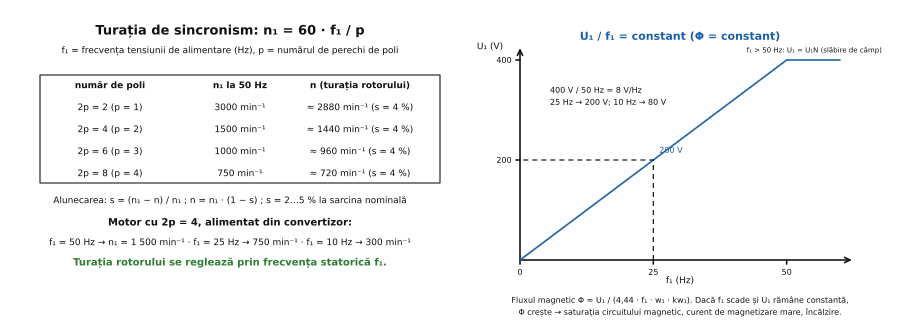
Convertizorul de frecvență realizează o conversie în două trepte: c.a. → c.c. → c.a. Elementele componente:
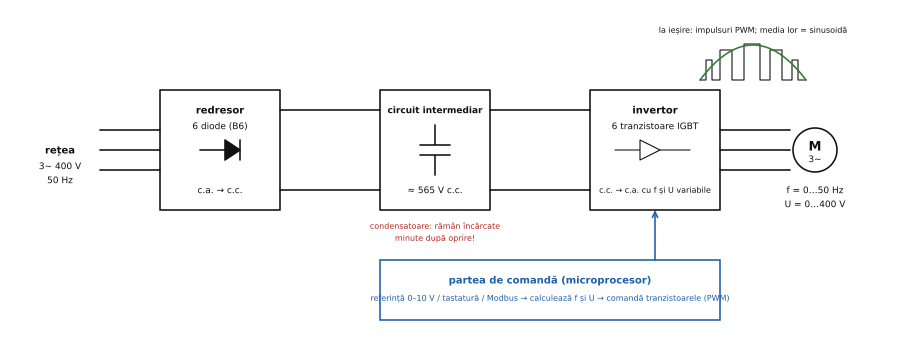
Tensiunea indusă în înfășurarea statorică este U₁ ≈ E₁ = 4,44 · f₁ · w₁ · kw₁ · Φ, deci fluxul magnetic este Φ ≈ U₁ / (4,44 · f₁ · w₁ · kw₁). Dacă frecvența se reduce la tensiune constantă, fluxul crește, circuitul magnetic se saturează, curentul de magnetizare crește puternic și motorul se încălzește. Pentru a menține fluxul la valoarea nominală, convertizorul reduce tensiunea proporțional cu frecvența: U₁ / f₁ = U₁N / f₁N = 400 V / 50 Hz = 8 V/Hz (25 Hz → 200 V; 10 Hz → 80 V). La flux constant, cuplul maxim și caracteristica mecanică se păstrează, deplasate paralel – motorul dezvoltă cuplul nominal la orice turație din domeniul 0…f₁N.
Convertizorul impune numai valoarea efectivă U₁ și frecvența f₁, după o caracteristică U₁ = f(f₁) liniară sau pătratică, fără informații despre starea rotorului. Turația nu este reglată în buclă închisă: la creșterea sarcinii scade cu alunecarea (2…5 %); unele convertizoare adaugă o compensare a alunecării estimată din curent. Nu necesită identificarea parametrilor motorului; admite mai multe motoare în paralel pe un convertizor și filtru sinus la ieșire. Este comanda standard pentru ventilatoare și pompe. Denumiri de producător: Danfoss „U/f”, „VVC+” cu caracteristică VT; Siemens P1300 = 0 (liniar) / 2 (pătratic); Schneider Ctt = Std / PUMP / UFq; ABB 99.04 = Scalar; Ziehl-Abegg Fcontrol – exclusiv scalar.
Convertizorul măsoară curenții statorici și, pe baza modelului matematic al motorului (parametri determinați prin autotune: R₁, R₂', L₁σ, L₂σ', Lm), descompune curentul statoric în două componente ortogonale: una care produce fluxul (id) și una care produce cuplul (iq), reglate independent, ca la motorul de curent continuu cu excitație separată. Rezultă cuplu nominal și peste nominal de la turație zero, reglarea precisă a turației (± 0,5 % fără traductor, ± 0,01 % cu traductor de turație) și răspuns dinamic rapid. Necesară la acționări cu cuplu constant și cerințe dinamice: transportoare, extrudere, macarale, lifturi, mașini-unelte. Admite un singur motor pe convertizor și, de regulă, nu admite filtru sinus. Denumiri: Siemens P1300 = 20 (fără traductor) / 21 (cu traductor); Schneider Ctt = UUC / PErF / SVC; ABB 99.04 = Vector; Danfoss „Flux sensorless” / „Flux with motor feedback”.
| Criteriu | scalar U/f liniar | scalar U/f pătratic | vectorial fără traductor | vectorial cu traductor |
|---|---|---|---|---|
| cuplu disponibil la turație mică | ≈ 100 % M N de la ≈ 3–5 Hz (cu compensare R₁) | redus, conform sarcinii pătratice | ≈ 150 % M N de la ≈ 0,5 Hz | ≈ 150 % M N la 0 Hz, menținere în poziție |
| precizia reglării turației | ± s (2…5 %) | ± s | ≈ ± 0,5 % | ≈ ± 0,01 % |
| mai multe motoare pe un convertizor | admis | admis | nu | nu |
| filtru sinus la ieșire | admis | admis | în general nu | nu |
| identificarea motorului (autotune) | opțională | opțională | obligatorie | obligatorie |
| aplicații tipice | pompe, transportoare ușoare, motoare vechi, motoare în paralel | ventilatoare, pompe centrifuge | transportoare, mixere, extrudere, compresoare | macarale, lifturi, mașini-unelte, înfășurătoare |
Concluzie pentru acționarea ventilatoarelor: comandă scalară cu caracteristică U/f pătratică, frecvență minimă 15…20 Hz (răcirea motorului, debitul minim de aer), timpi de accelerare și decelerare mari (30…90 s), prindere din mers și eliminarea frecvențelor de rezonanță. Capitolele următoare detaliază alegerea, instalarea, parametrizarea și verificarea acestei acționări.
Citiți întâi acest tabel. Fiecare termen apare apoi în lecție cu litere groase la prima folosire.
| Termen | Ce înseamnă, simplu | De reținut |
|---|---|---|
| Ventilator | o „roată cu palete” învârtită de un motor, care împinge aerul dintr-un loc în altul | face două lucruri: mută aer (debit) și îl împinge prin canale (presiune) |
| Debit (Q) | câți metri cubi de aer trec într-o oră: m³/h | un porc de 100 kg are nevoie de ≈ 14 m³/h iarna și ≈ 108 m³/h vara (DIN 18910) |
| Presiune (Δp) | cât de tare „apasă” ventilatorul aerul ca să-l treacă prin filtre și canale; se măsoară în pascali (Pa) | 1 000 Pa ≈ 0,01 bar ≈ 10 cm coloană de apă; un grajd cere 30–50 Pa, o centrală de aer 500–1 000 Pa |
| Turație (n) | de câte ori se învârte axul pe minut: min⁻¹ (rot/min) | la 50 Hz motorul cu 4 poli merge cu ≈ 1 450 min⁻¹ |
| Frecvență (f) | de câte ori pe secundă își schimbă sensul curentul din priză: 50 Hz în Europa | frecvența „învârte” câmpul magnetic din motor: n = 60 · f / p |
| Câmp învârtitor | „magnetul rotitor” făcut de cele trei faze în stator; el trage rotorul după el | 3 000 min⁻¹ la 2 poli, 1 500 la 4 poli, 1 000 la 6 poli, 750 la 8 poli (la 50 Hz) |
| Alunecare (s) | rotorul rămâne mereu puțin în urma câmpului, „fără să-l ajungă vreodată” (formularea din cursurile franceze) | 2–5 % la sarcină nominală; fără alunecare nu există cuplu |
| Cuplu (M) | „forța de răsucire” de la ax, în N·m; cât de greu e de învârtit ventilatorul | M = 9 550 · P / n |
| Cuplu pătratic (variabil) | la ventilator, cuplul crește cu pătratul turației: la jumătate de turație, un sfert de cuplu | de aceea puterea scade cu cubul: la jumătate de turație, o optime de putere |
| Convertizor de frecvență (CF) | aparat care ia curentul de 50 Hz din rețea și face din el „o rețea nouă”, cu frecvența și tensiunea pe care le vrem noi | redresor → circuit intermediar de c.c. (≈ 565 V) → invertor cu tranzistoare → motor |
| U/f constant | când scădem frecvența, scădem și tensiunea, în aceeași proporție | bobina statorului are reactanța X = 2πfL; la f mic, cu U neschimbat, curentul ar crește și fierul s-ar satura |
| Curbă U/f pătratică | la ventilatoare tensiunea se scade și mai mult decât frecvența, pentru că motorul nu are nevoie de cuplu mare la turație mică | 25 Hz → ≈ 110 V în loc de 200 V; motor mai rece și mai silențios |
| PWM (modulație în lățime de impulsuri) | invertorul nu dă o sinusoidă adevărată, ci mii de impulsuri dreptunghiulare pe secundă, mai late sau mai înguste; motorul „vede” media lor | frecvența impulsurilor (2–16 kHz) este fluieratul pe care îl auzim din motor |
| Filtru sinus | bobine și condensatoare care netezesc impulsurile PWM înapoi într-o sinusoidă | cu el nu mai e nevoie de cablu ecranat și se pot lega mai multe motoare |
| Filtru du/dt | filtru mai mic, care doar rotunjește fronturile impulsurilor | pentru cabluri de motor de 50–150 m |
| Cablu ecranat | cablu cu o „cămașă” metalică în jurul conductoarelor; perturbațiile se întorc prin ea la convertizor în loc să se răspândească | ecranul se prinde de jur împrejur (360°) la ambele capete, nu cu o „codiță” |
| Motor asincron standard (IEC) | motorul trifazat obișnuit, cu rotor „în colivie” | la convertizor: izolație după SR EN 60034-17 și termistori PTC |
| Motor cu rotor exterior | motor „întors pe dos”: partea care se rotește este afară și poartă direct paletele | brevetat de Emil Ziehl; se reglează și prin tensiune; la convertizor cere filtru sinus |
| Ventilator EC | ventilator cu motor cu magneți permanenți și convertizorul pus chiar în motor | se comandă cu 0–10 V; randamentul cel mai mare |
| Transformator în trepte | „cutie” care dă motorului 80, 100, 130, 170 sau 230 V; la tensiune mai mică, motorul mic merge mai încet | numai pentru motoare mici „comandabile în tensiune”; frecvența rămâne 50 Hz |
| Regulator electronic de tensiune (triac) | taie o parte din fiecare undă de tensiune, ca un variator de lumină | „la fel de eficient ca reglarea luminii apăsând repede întrerupătorul” (curs Bac Pro MELEC); motorul se încălzește cu 10–20 K |
| Clapetă (registru) | o „ușă” în canal care închide parțial drumul aerului | reglează debitul, dar ventilatorul merge tot la turație plină: energie irosită |
| Referință (valoare prescrisă) | ce vrem să obțină reglajul: „300 Pa în canal”, „20 °C în grajd”, „800 ppm CO₂” | se dă din potențiometru, din 0–10 V sau din tastatura convertizorului |
| Reacție (măsură) | ce măsoară traductorul în realitate | 4–20 mA sau 0–10 V de la traductorul de presiune, temperatură, CO₂ |
| Regulator PID | „creierul” care compară referința cu reacția și corectează turația până se potrivesc | este gata făcut în convertizor; se reglează un câștig (P) și un timp (I) |
| Bandă de reglare | la grajduri: intervalul de temperatură în care ventilația urcă de la minim la maxim | iarna 3–4 K, vara 5–7 K (LWK Niedersachsen, top agrar) |
| Ventilație minimă | debitul sub care nu se coboară niciodată, ca animalele/oamenii să aibă aer curat | la grajd tipic 20 %; la clădiri f min 15–20 Hz |
| PTC / termocontact (TB) | „termometru” pus în bobinajul motorului: PTC își crește rezistența la cald, termocontactul se deschide | singura protecție termică bună la turație variabilă |
| Curent de scurgere | un curent mic care se scurge prin capacitățile cablului și filtrului spre pământ, din cauza impulsurilor PWM | > 3,5 mA → conductor PE gros (10 mm²) sau dublu; DDR obișnuit poate declanșa fals |
| DDR (RCD) tip B | dispozitiv diferențial care „vede” și curenții continui din spatele convertizorului | tipurile AC și A nu-i văd; recomandat 300 mA |
| Prindere din mers | convertizorul „ghicește” turația cu care se învârte deja ventilatorul (din tiraj sau vânt) și pornește sincronizat | fără ea: supracurent la pornire |
| Frecvențe de evitare | turații la care instalația vibrează (rezonanță); convertizorul sare peste ele | se găsesc la punerea în funcțiune, prin baleiere lentă |
| Ocolire (bypass) | drum de rezervă: motorul primește curent direct din rețea dacă se strică convertizorul | cu 2 contactoare interblocate sau cu un comutator manual 0 – AUTO – 100 % |
| Mod incendiu | ventilatorul merge la turația maximă „până cade”, orice s-ar întâmpla | contact NC (deschis = incendiu) de la centrala de detecție |
| STO (cuplu oprit în siguranță) | intrare care taie sigur comanda tranzistoarelor: motorul nu mai poate porni | nu separă galvanic; pentru lucrări, separatorul blocat cu lacăt |
Aerul intră prin mijloc și este aruncat spre margine, ca apa dintr-o găleată învârtită. Dă presiune mare. Cu pale curbate înapoi este eficient și „nu se supraîncarcă”; cu pale înainte e mic și silențios. Fără carcasă spirală se numește ventilator cu rotor liber și e standardul din centralele de tratare a aerului (CTA).
Aerul trece drept prin el, ca la o elice. Debit mare, presiune mică. Este ventilatorul de grajd, de perete, de acoperiș, de tunel, de turn de răcire.
Ventilator la care convertizorul este construit în motor. Un singur cablu de alimentare, un fir de comandă 0–10 V. Cel mai economic, dar nu se repară cu piese universale.
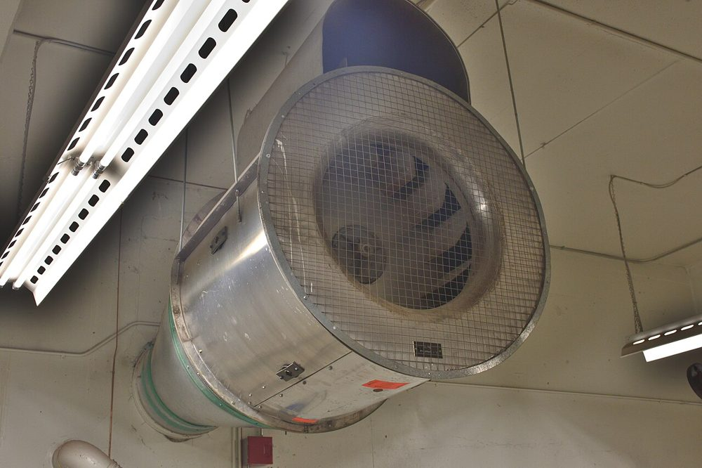
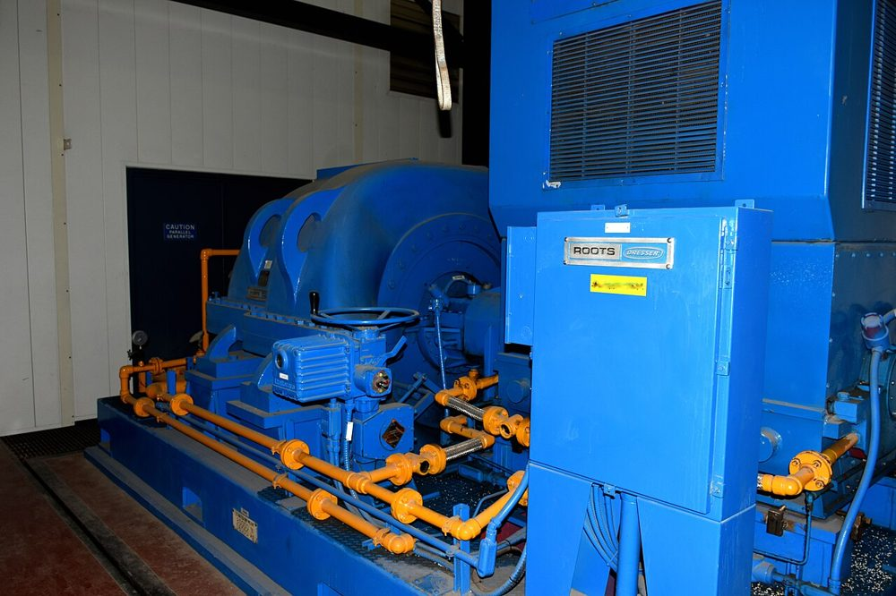
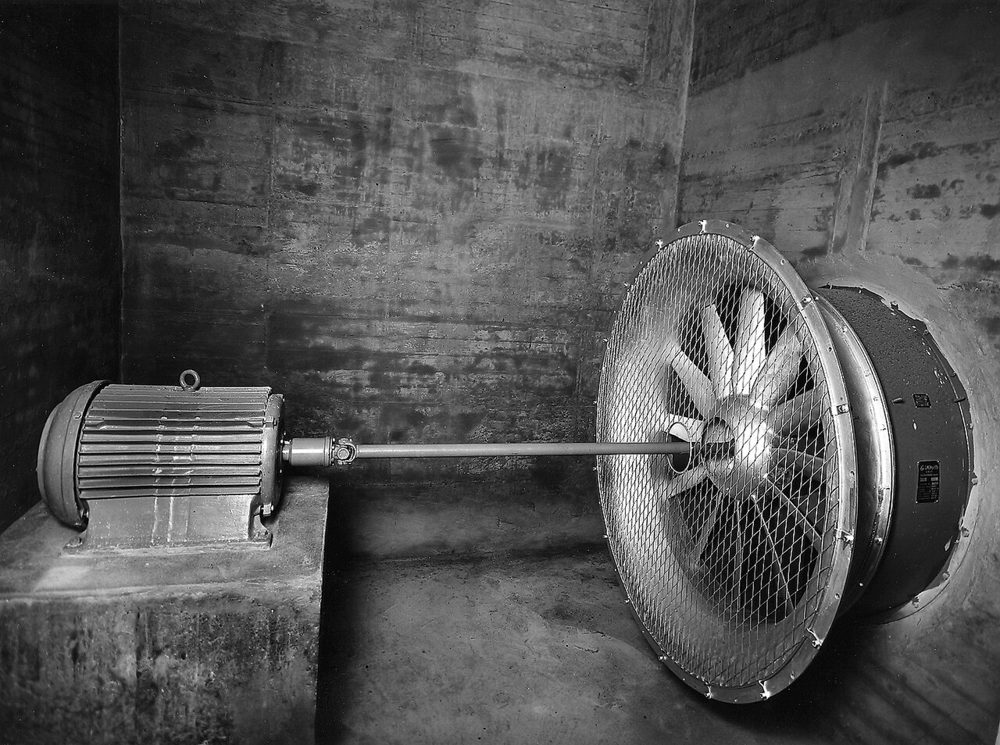
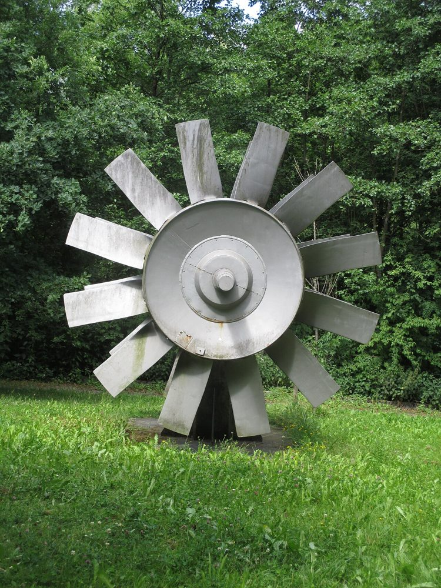
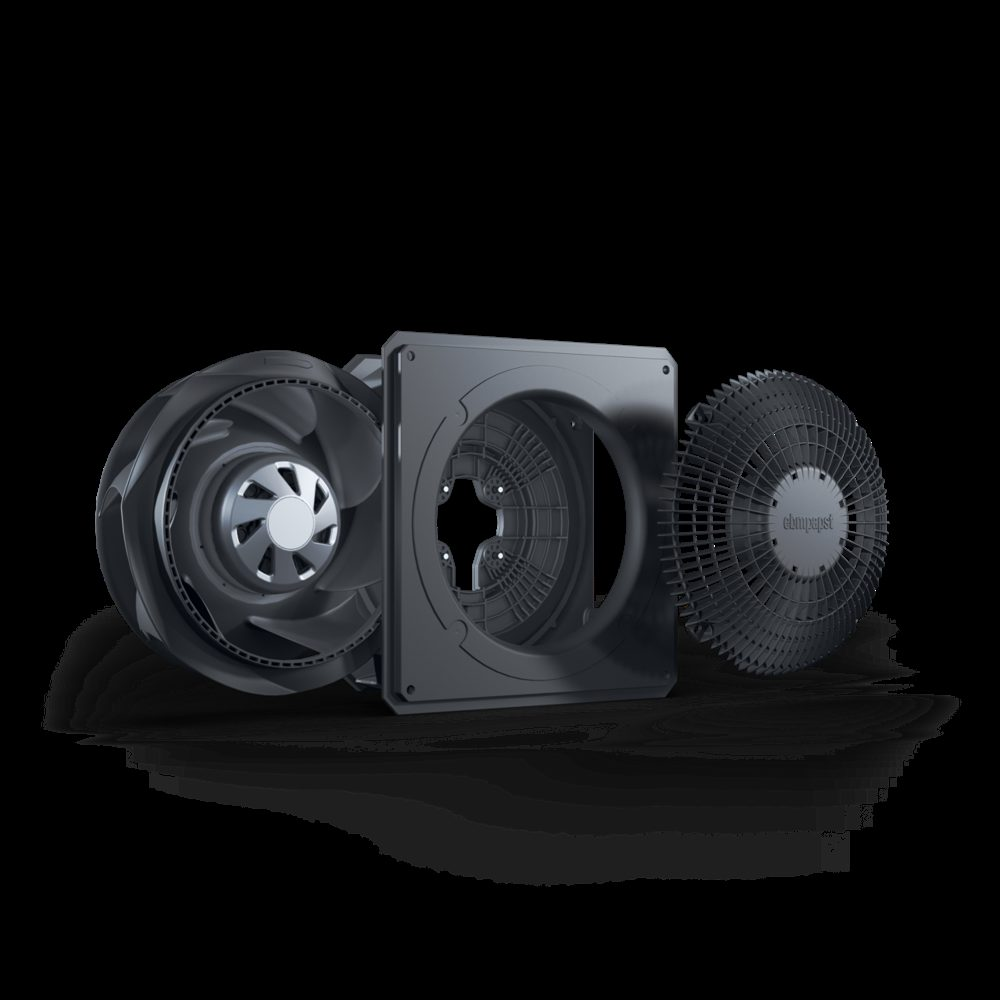
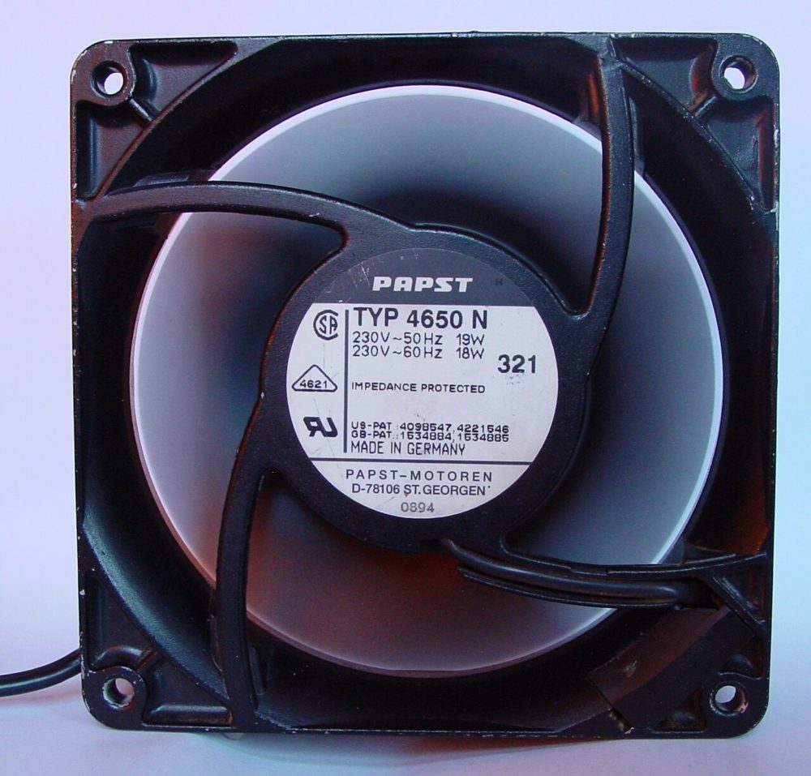
Gândiți-vă la un furtun de grădină. Cu cât vrem mai multă apă, cu atât mai mult trebuie să apese pompa. La aer e la fel: instalația (canale, filtre, grile) „se opune” cu o presiune care crește cu pătratul debitului. Ventilatorul, la o turație dată, poate da presiune mai mare la debit mic și mai mică la debit mare. Locul unde cele două curbe se întâlnesc este punctul de funcționare.
Ca să scădem debitul avem două drumuri, și diferența dintre ele e toată lecția:
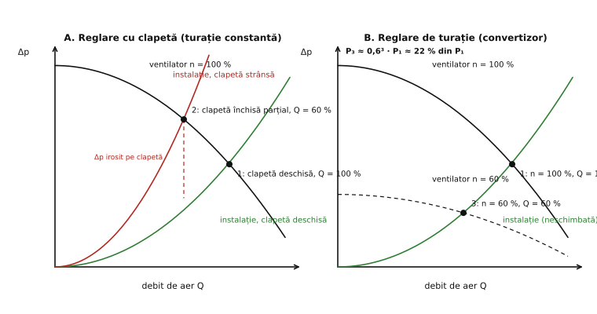
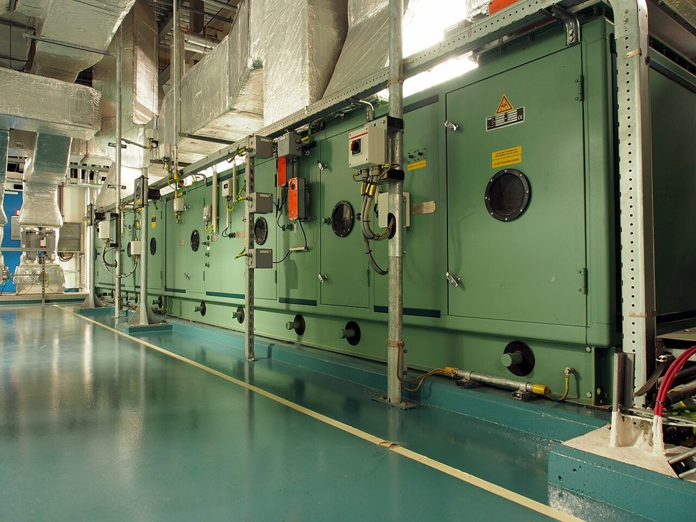
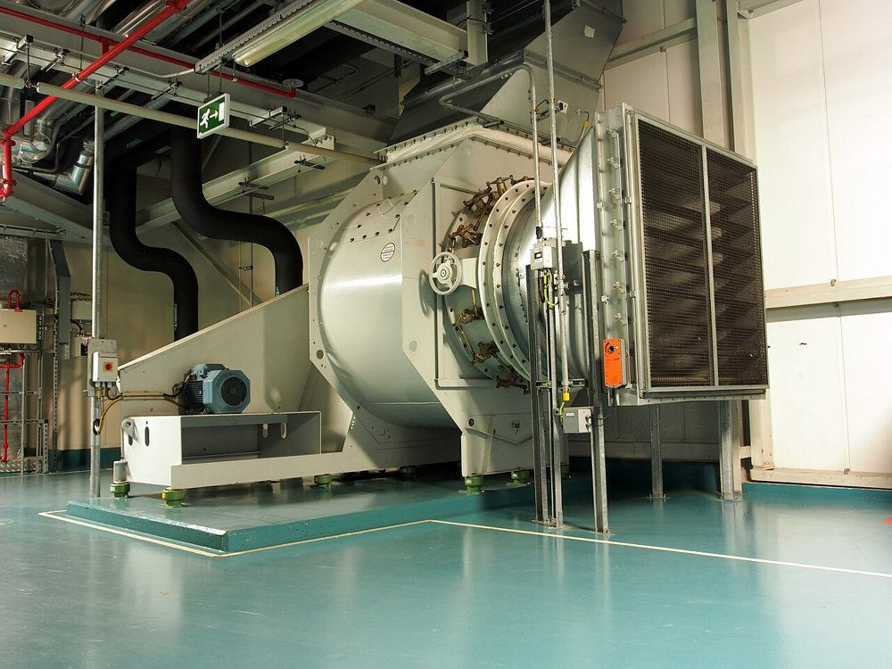
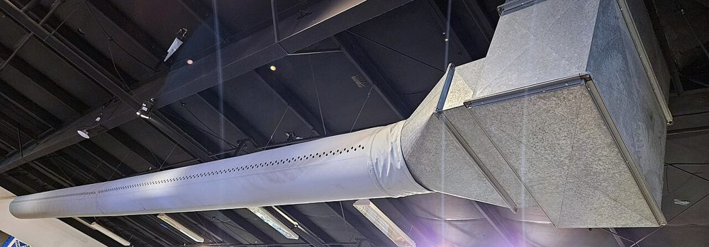
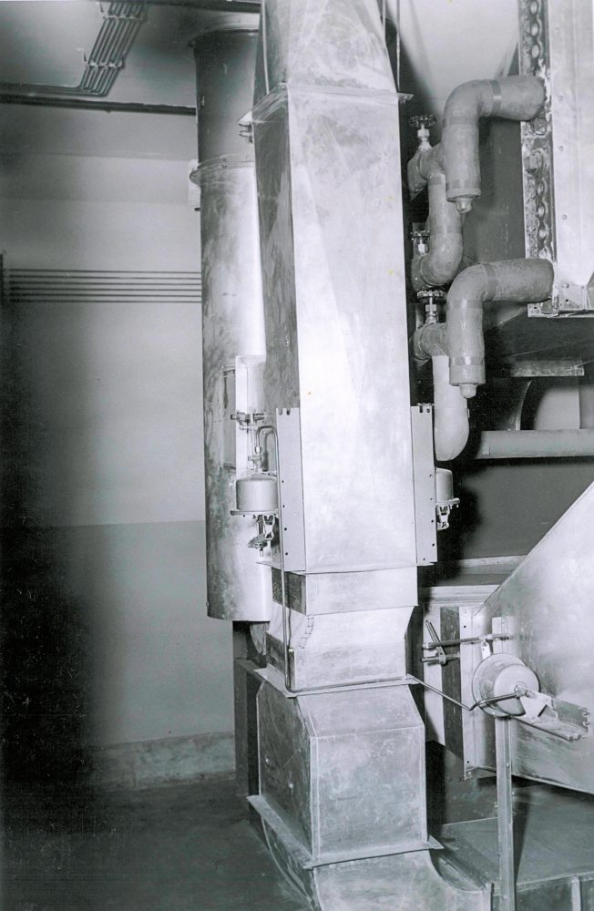
Pentru același ventilator în aceeași instalație, când turația se schimbă, se schimbă totul după trei reguli simple. Le găsiți la fel în manualul Danfoss, în cursul belgian Energie+, în fișa Vostermans și în subiectele de BTS:
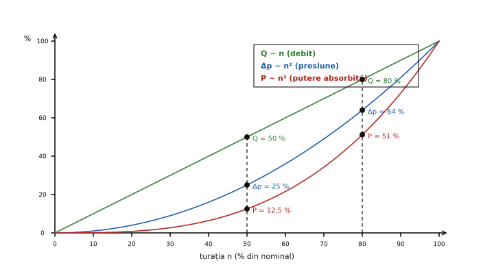
| Turație | Debit | Presiune | Putere |
|---|---|---|---|
| 1 400 min⁻¹ | 10 000 m³/h | 80 Pa | 500 W |
| 700 min⁻¹ (jumătate) | 5 000 m³/h (jumătate) | 20 Pa (un sfert) | 62,5 W (o optime) |
Vostermans o spune și ca regulă de buzunar: „la fiecare 20 % mai puțină turație, consumul se înjumătățește”.
Un moto-ventilator merge la 50 Hz în punctul A: 1 483 min⁻¹, 10 N·m → P = 1 553 W. La 25 Hz (tensiune 115 V, legea U/f) ajunge în punctul B: 745 min⁻¹, 2,5 N·m → P = 195 W, adică de 8 ori mai puțin. Concluzia cerută elevilor: „când debitul e mai mic, este avantajos să alimentăm moto-ventilatorul prin variator”.
Ventilator de 15 kW, 4 000 h/an, din care 60 % din timp la 70 % turație: P = 15 · 0,7³ = 5,1 kW. Energie cu convertizor ≈ 36 300 kWh/an față de ≈ 60 000 kWh cu clapetă: ≈ 39 % economie.
Legile țin cât timp instalația nu are o presiune „fixă” de învins (un filtru înfundat, o suprapresiune impusă). Atunci câștigul e mai mic — ca la pompele cu înălțime statică din lecția trecută.
Ordinea de mai jos este chiar ordinea din fișa DLG „Lüftung von Schweineställen” (cap. 4.4), de la cea mai economică la cea mai risipitoare:
| Metoda | Cum lucrează | Ce spune documentația | |
|---|---|---|---|
| a | Ventilator EC | motor cu magneți + convertizor integrat | DLG: economie „în medie peste 50 %” față de ventilatorul standard cu triac, amortizare ≈ 3 ani; Chambres d'agriculture Bretagne (test 2019): 69 % economie |
| b | Convertizor de frecvență (cu filtru sinus la ventilatoare speciale) | schimbă frecvența și tensiunea | Bretagne: 38 % economie cu variator pe ventilator asincron clasic; Ziehl-Abegg: 206,78 €/an economie pe un ventilator Ø 630, amortizare sub 2,5 ani |
| c | Transformator în trepte | scade tensiunea la 80/100/130/170/230 V | DLG: pierderi 2 % la 230 V și 15 % la treapta minimă; treapta minimă ≈ 80 V (1~) / 100 V (3~); atenție: la tensiune redusă curentul crește — ventilatorul Multifan 6E71: 3,15 A la 230 V, dar 3,44 A la 180 V (DLG-Prüfbericht 5015) |
| d | Regulator electronic cu triac | taie o parte din undă | DLG: motoarele se încălzesc cu 10–20 K, consumul e cu 10–20 % mai mare decât la transformator; „ieftin la cumpărare, dar foarte scump la costul total” |
| — | Clapetă / registru | închide drumul aerului | curs Bac Pro MELEC: la 80 % debit puterea e încă 95 % fără variator, dar 50 % cu variator; TROX: la −25 % debit clapeta scade puterea de la 21,1 la 20,2 kW, turația de la 10,4 la 5,7 kW |
| — | Motor cu 2 turații (Dahlander) | schimbă numărul de poli | Danfoss, turn de răcire 30 kW: motor cu 2 turații 111 375 kWh/an, convertizor 49 176 kWh/an (−44 %) |
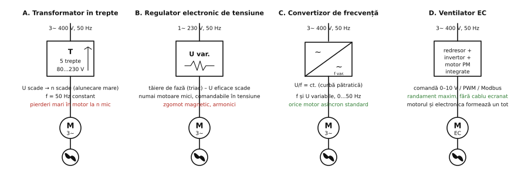
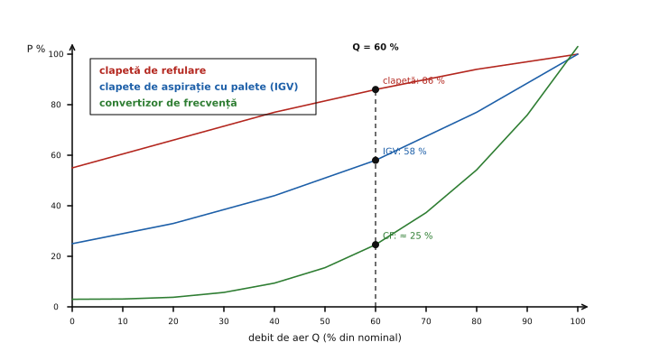
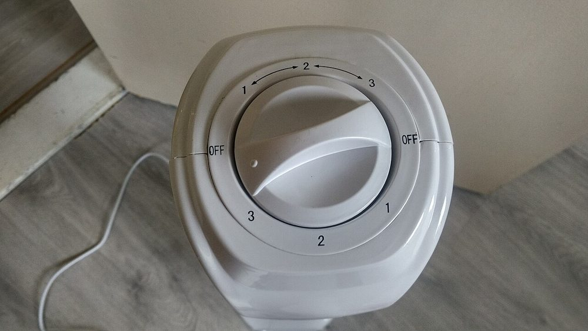
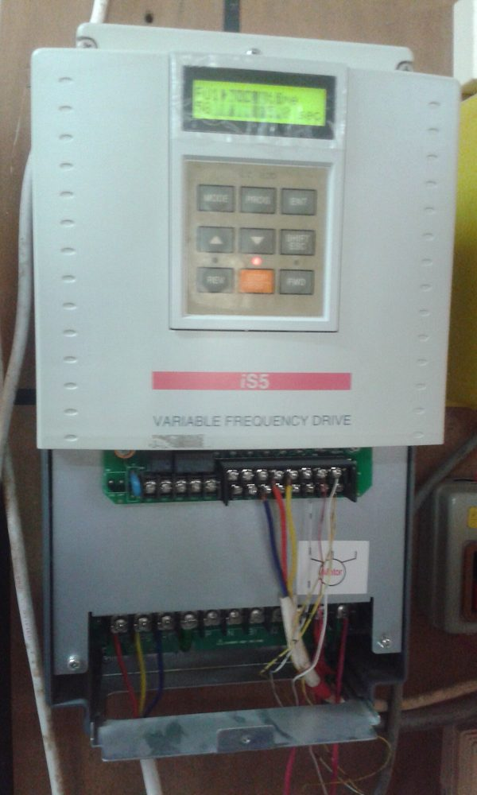
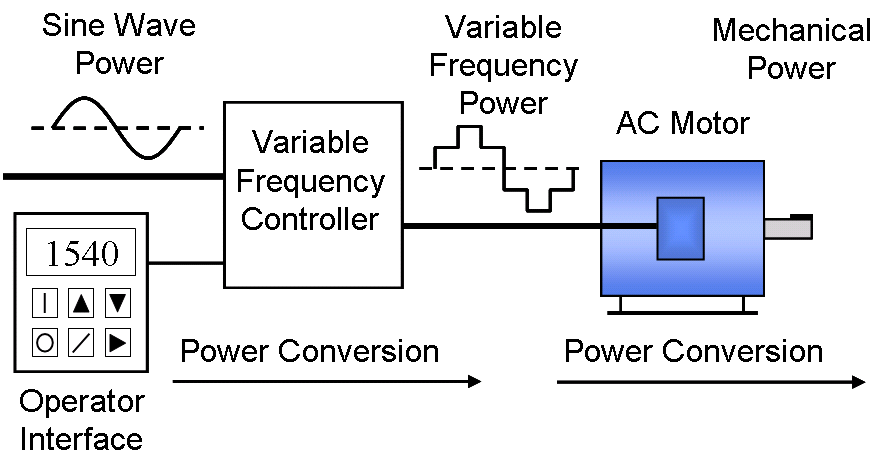
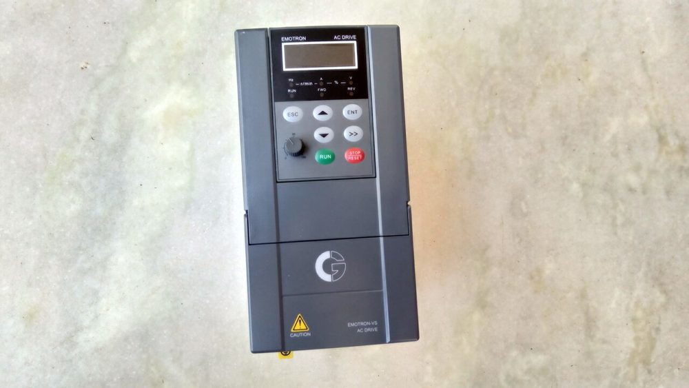
De ce transformatorul și triacul nu merg la un motor obișnuit? Pentru că frecvența rămâne 50 Hz, deci câmpul învârtitor rămâne la 1 500 min⁻¹. Motorul e doar „ținut în frâu” prin alunecare mare, iar diferența se face căldură în rotor. Cursul BTS spune că ar fi „un bilanț energetic deplorabil”. Merg numai motoarele mici, construite special (rotor exterior, rezistență mare în rotor). Convertizorul, în schimb, schimbă chiar viteza câmpului: motorul lucrează cu alunecare mică la orice turație.
În CTA, la ventilatoarele mari de acoperiș și în industrie: motor trifazat cu rotor în colivie, 4 poli (1 450 min⁻¹), IE3, cuplat direct sau prin curele. Pentru convertizor verificăm:
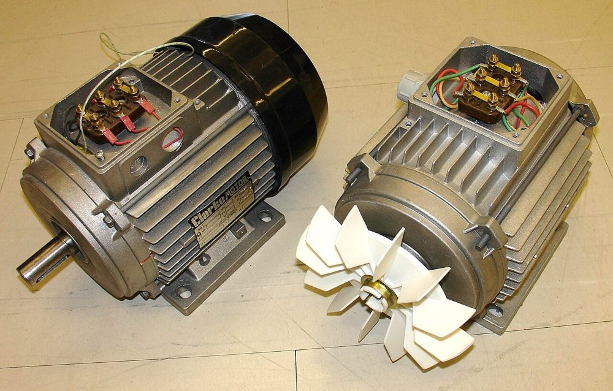
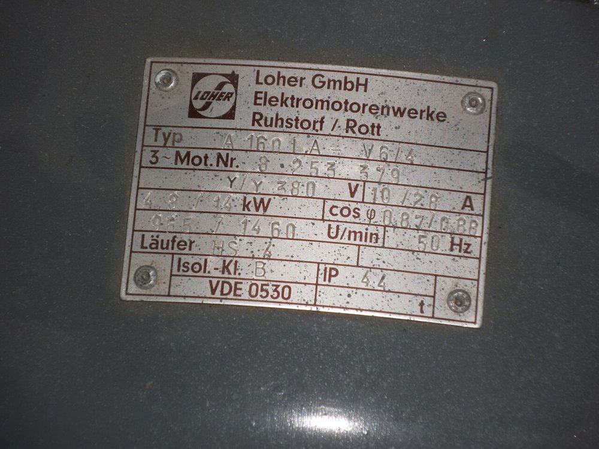
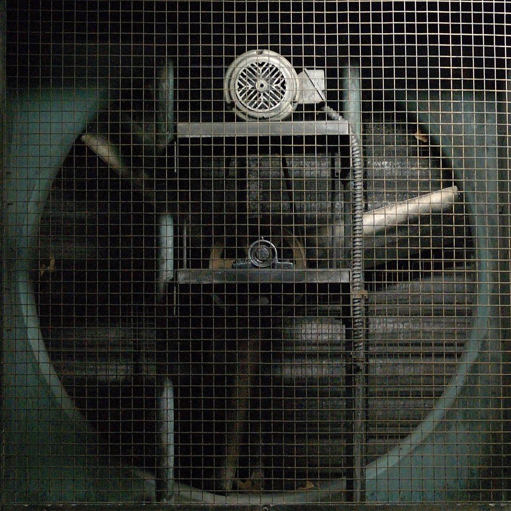
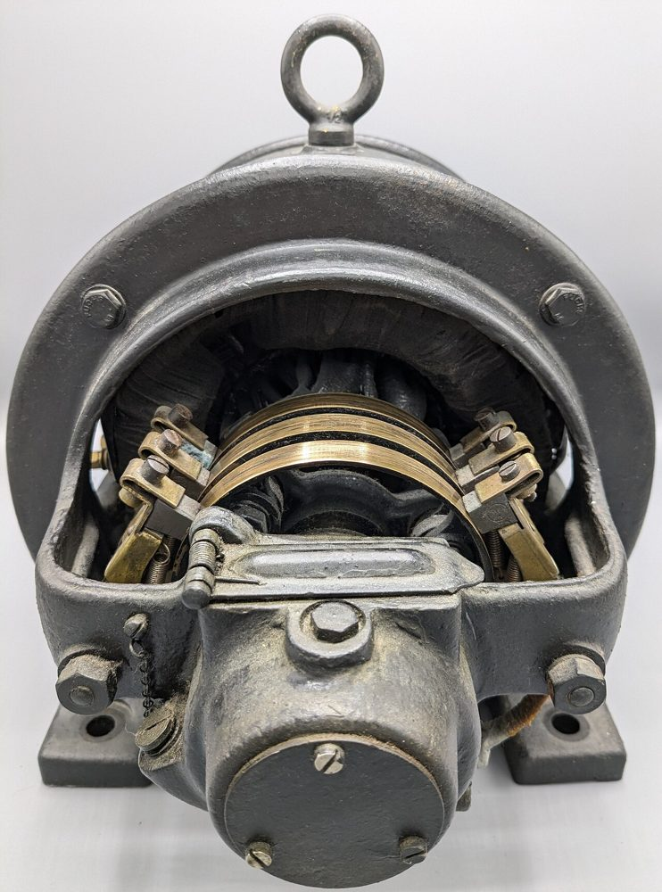
Producătorii de ventilatoare (Ziehl-Abegg, ebm-papst, Rosenberg) fac motoare „întoarse pe dos”: rotorul este afară și poartă paletele. Se pot regla prin tensiune (transformator, triac), au termocontacte TB sau termistori TP în bobinaj. La convertizor, ebm-papst cere „filtru sinus cu acțiune pe toți polii (fază-fază și fază-pământ)” și acordul producătorului.
Motor sincron cu magneți permanenți, alimentat de electronica proprie: rețea → redresor → circuit de c.c. → invertor → motor. ebm-papst: se comandă „prin semnal 0–10 V sau Modbus-RTU”. Vostermans (ECplus): peste 80 % economie față de sistemele clasice în testul IFIP; controlerul separat IP65, motor IP55, comutator de ocolire opțional, contact de alarmă pentru computerul de climă. Pentru electrician ventilatorul EC este un consumator: nu se alege convertizor, dar se respectă curentul de scurgere și filtrul din instrucțiuni.
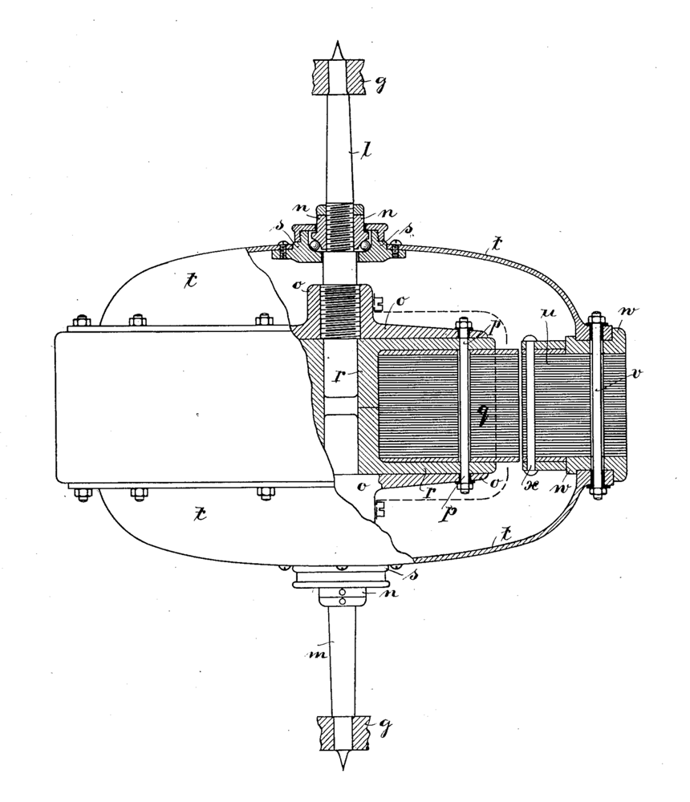
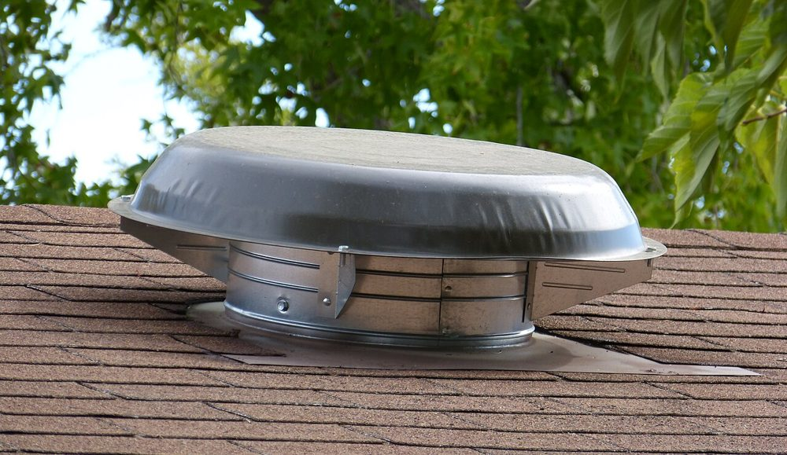
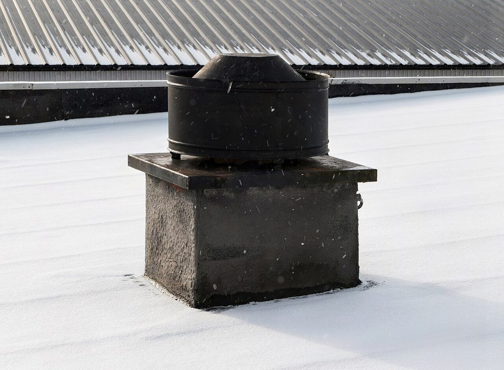
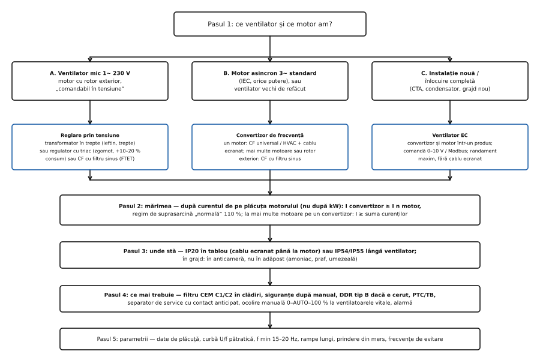
Tensiunea scade mai repede decât frecvența. Ziehl-Abegg livrează Fcontrol cu ea activată din fabrică („UF quadratisch = ON”), Danfoss o numește „VT”, Siemens p1300 = 2, Schneider curba „P”.
Danfoss FC 102: exemplu de programare pentru temperatură (senzor 4–20 mA, referință de la potențiometru) în ghidul de proiectare, cap. 2.8. Siemens G120P are „macro-ul 105”: reglare de presiune pentru ventilator + mod de urgență cu referință fixă.
Danfoss 1-73 „Flying start”; Siemens p1200 = 1 („Fangen”); Schneider F301. Ziehl-Abegg: „Fangmodus”. Obligatorie la ventilatoare de acoperiș, evacuare, tunel.
Danfoss: până la 4 benzi („semi-automatic bypass”); Siemens p1091…p1094 cu lățime p1101; Ziehl-Abegg: 3 benzi. Turnurile de răcire au adesea rezonanțe (Danfoss).
FTET: „ventilație minimă” 6…100 %, din fabrică 20 %, are prioritate peste orice. În clădiri: f min 15–20 Hz; sub prag ventilatorul se oprește și repornește când presiunea scade.
FTET: timp de accelerare/decelerare din fabrică 20–40 s după mărime; Danfoss FC 102 propune 60 s. Fără rezistență de frânare — Danfoss cere una doar dacă vântul poate supra-tura ventilatorul.
Danfoss 22-6*: dacă cuplul estimat scade sub prag peste 15 Hz → avarie. ABB ACH580: „supraveghere de subsarcină, de ex. curea ruptă”.
Danfoss 24-0*: toate comenzile de oprire sunt ignorate, jurnal cu ultimele 10 evenimente care nu se poate șterge, garanția expiră; Siemens ESM la 1 350–1 500 min⁻¹ pe DI5. Detalii în schema 13.
Ziehl-Abegg „Motorheizung”: un curent continuu mic în bobinaj împiedică înghețarea și condensul la ventilatoarele oprite iarna (grajduri, exterior).
După pană, ventilatorul repornește singur (Siemens p1210 = 26; FTET: „după căderea rețelei urmează repornire automată”). Permis la ventilatoare, nu la mașini-unelte.
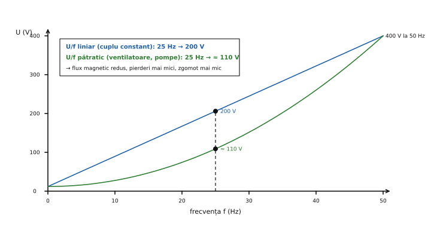
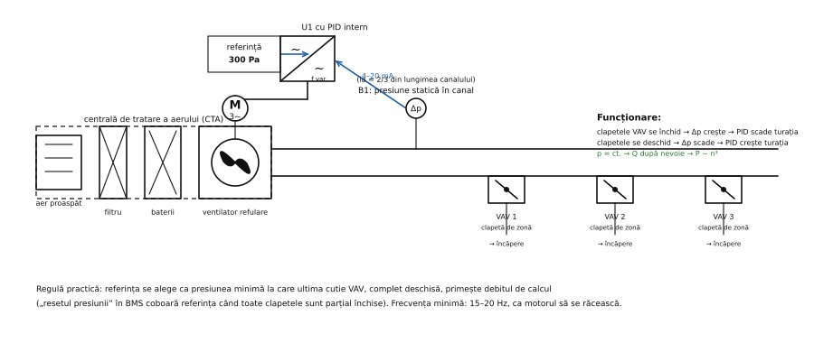
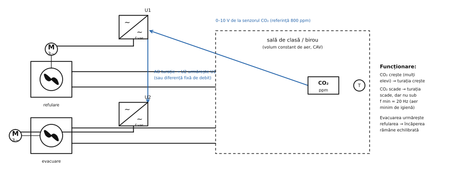
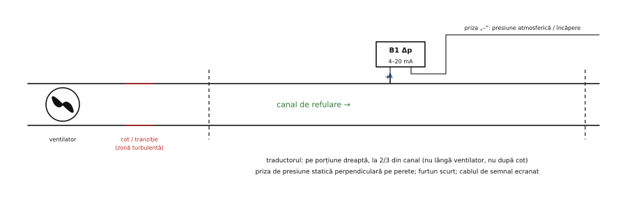
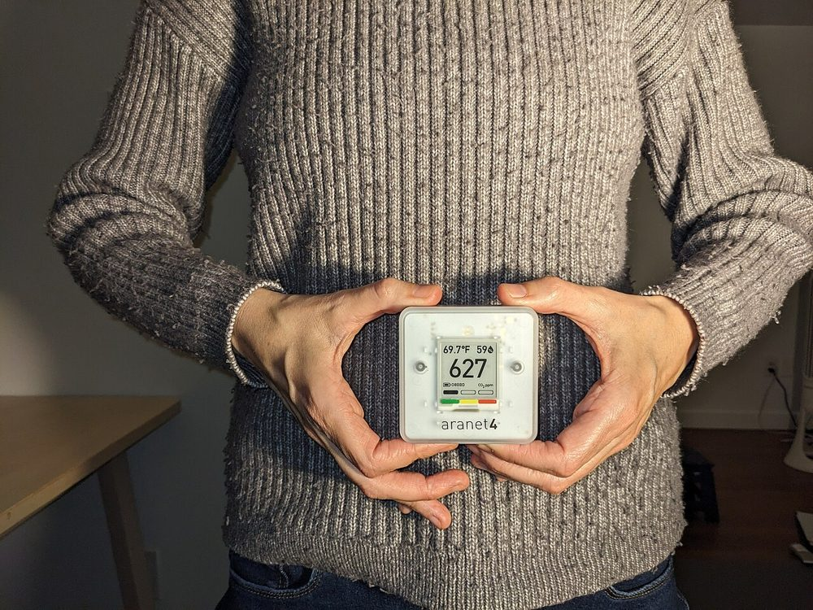
Cât aer trebuie. DIN 18910-1 (tabelele reproduse de LAVES Niedersachsen) dă debitul pe animal: porc de 100 kg — 108 m³/h vara (zona I), 72 m³/h vara (zona II), 14,1 m³/h iarna. Scroafă cu purcei 250 kg: 187 / 125 / 27 m³/h. DLG: „vara debitul este de 10 ori, în cazuri extreme de 20 ori, cel de iarnă”. Exact această plajă 1 : 10 este motivul pentru care reglarea de turație contează atât de mult în zootehnie.
Exemplul DLG (anexa 1): grajd cu 500 porci la îngrășat, populare–depopulare totală, 25–28 kg → 100–120 kg. Debit de vară: 84 m³/h × 500 = 42 000 m³/h. Ventilatoare de Ø 630 mm, 230 V, 10 500 m³/h la 30 Pa → 4 bucăți. Admisia de vară: fantă de 6 cm pe 47,6 m (viteză max. 4 m/s); iarna aer prin tavan poros (150 m³/m²/h). Reglarea: „cu ajutorul unui computer de climă”. Rezistența de proiectare uzuală: 50 Pa.
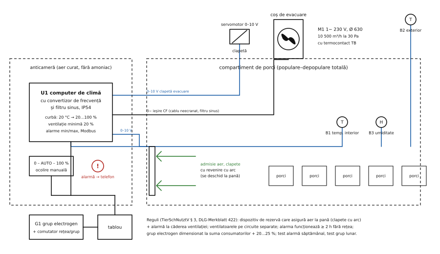
Cum reglează computerul de climă (Ziehl-Abegg FTET): valoare prescrisă 20 °C; bandă de reglare 2–20 K (din fabrică 4 K): pe această bandă ventilația urcă de la minim la maxim; ventilație minimă 20 % (are prioritate — niciodată oprit complet); curbă de creștere pe zile (ziua 1: 26 °C / 10 %; ziua 120: 20 °C / mai mult); alarmă la −5 K / +5 K față de prescris, cu întârziere 60 s; până la 5 grupuri de ventilatoare: unul reglat, celelalte în trepte; senzor de admisie și de umiditate; Modbus până la 32 aparate. LWK Niedersachsen: bandă mai mare de 4 °C iarna; Strukamp (top agrar): 3–4 °C iarna, 5–7 °C vara.
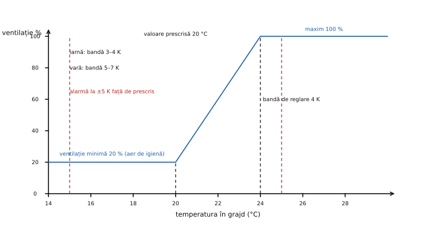
Ce cere legea germană (Tierschutz-Nutztierhaltungsverordnung § 3 alin. 6): unde ventilația depinde de o instalație electrică, trebuie să existe un dispozitiv de rezervă care asigură aer la pană și o alarmă care anunță pana. DLG-Merkblatt 422 detaliază: se supraveghează căderea tensiunii, a unei faze, scăderea cu peste 15 %, declanșarea protecțiilor, „instalațiile de reglare a turației — transformatoare și convertizoare”; ventilatoarele pe circuite separate; clapetele de avarie se deschid cu arc sau cu acumulator; alarma merge ≥ 2 h fără rețea; grup electrogen = suma consumatorilor + 20–25 %; test alarmă săptămânal, test grup lunar. Limite de gaze în grajdul de porci: NH₃ 20 ppm, CO₂ 3 000 ppm, H₂S 5 ppm; zgomot maxim 85 dB(A).
Cât se economisește. Ziehl-Abegg (flyer Fcontrol agricultură): pe un ventilator Ø 630 de 6 poli, 1~ 230 V, trecerea de la regulator cu triac la Fcontrol economisește 206,78 €/an; un Fcontrol de 6 A (≈ 1 000 €) cu 2 ventilatoare se amortizează în sub 2,5 ani. SKOV (Danemarca), „Dynamic MultiStep”: mai multe ventilatoare la ≈ 50 % în loc de puține la 100 % — consumul scade de la 5,3 la 2,9 kWh pe porc produs (−45 %). Chambres d'agriculture Bretagne: martor 15,99 kWh/loc/an, EC 4,97 kWh/loc/an.
Reguli de montaj în grajd (Ziehl-Abegg): aparatul în anticameră; IP54; 0–55 °C; cablu de motor neecranat cu filtru sinus; cabluri de comandă max. 30 m, ecranate peste 20 m, la 20 cm de forță; DDR tip B 300 mA la aparatele trifazate; la mai multe ventilatoare pe un aparat „se recomandă insistent” să nu se folosească intrarea TB comună (altfel un ventilator defect le oprește pe toate), ci câte un aparat de protecție pe ventilator; comutator de ocolire S-D-25/50 (0 – AUTO – 100 %), la 100 % ventilatoarele merg direct din rețea, fără protecția TB.
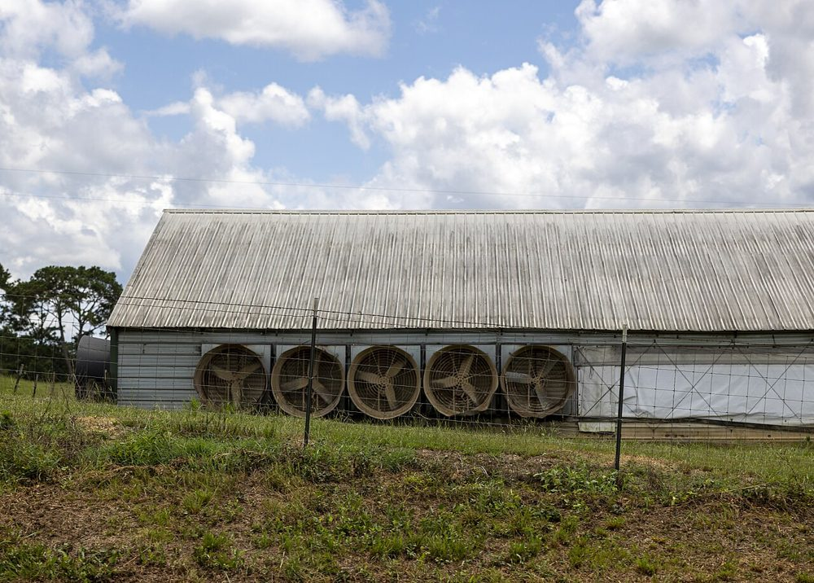
Legea germană (TierSchNutztV § 19): pentru pui broiler „cel puțin 4,5 m³/h pe kilogram de greutate vie”, iar la peste 30 °C afară, temperatura din hală „cu cel mult 3 °C peste cea exterioară”. DIN 18910: pui de 2 kg — 7,9 m³/h vara, 0,9 m³/h iarna; găină ouătoare de 2 kg — 5,8 / 0,7 m³/h. ClimatBat (Chambres d'agriculture): ≈ 5 m³/h pe kg, „≈ 200 m³/h pe m²”, viteza aerului la animal ≥ 1 m/s vara. ITAVI: minim 3 m³/h/kg la pulverizare de apă.
La păsări computerele de climă (SKOV DOL 534, Fancom Lumina) lucrează în trepte cu ciclu de timp pentru ventilația minimă („o treaptă stă pornită/oprită cel puțin 1 minut”) și dau ieșire 0–10 V pentru ventilatoarele reglate; SKOV: primul ventilator pe ciclu nu trebuie să dea mai mult de 5 × ventilația minimă; exemplu broiler: 0,12 m³/h pe pasăre la ventilația minimă. Ventilatoarele Multifan (Vostermans) există în trei variante de motor: E (triac), T (transformator), F (frecvență).
Aici ventilatoarele nu evacuează aer, ci răcoresc: DLG-Merkblatt 450 cere 800–1 200 m³/h instalate pe vacă, sub 40 W la 1 000 m³/h, viteza aerului ≥ 1 m/s la animal, pornire de la 16 °C sau THI > 67. LfL Bayern: ventilatoarele la 2,7 m înălțime, înclinate 15–25°, ≥ 2 m/s la animal, comandă după indicele temperatură-umiditate. Exemplu LfL/Sachsen: grajd cu 326 locuri, 12 ventilatoare, 284 000 m³/h = 870 m³/h pe loc, 29,7 W pe loc, 31,2 kWh pe vacă și an. Recomandarea LfL este prudentă: comandă termostatică, într-o treaptă (până la 16 A) sau în mai multe trepte; reglarea turației „de preferat numai ca pornire stea-triunghi”. Debite DIN 18910 pentru vaca de 700 kg cu 30 kg lapte: 344 / 258 / 87 m³/h.
| Aplicația | Ce s-a făcut | Rezultat (din sursă) |
|---|---|---|
| Ventilator de evacuare la uscător prin pulverizare, industrie chimică (ABB, Völpker) | ventilator vechi 45 kW cu curele înlocuit cu radial Reitz cuplat direct + motor IE3 + ACS880, ≈ 6 000 h/an | −59,8 % energie la turație cu 40 % mai mică, 75,5 MWh/an, 22 640 €/an, amortizare 1,9 ani |
| Suflanta arzătorului la un cazan de abur de 10 t/h (Bosch) | suflantă de 22 kW cu convertizor cuplat la reglajul de ardere | ≈ 48 000 kWh/an (−42 %), ≈ 6 720 €/an, amortizare „de obicei într-un an” |
| Instalație de ventilație a unui supermarket (dena) | convertizoare setate pe nevoia reală de debit și program | 192 000 kWh/an, 42 240 €/an, amortizare 0,8 ani; regula dena: la −50 % debit puterea scade „sub 15 %” |
| Cabine de vopsire și uscătoare (LfU Bayern / Fraunhofer IPA) | motoare de ventilator cu convertizor | „economii anuale de peste 30 %” |
| Turn de răcire, ventilator 30 kW (Danfoss, ghid de aplicații) | motor cu 2 turații → convertizor, 4 500 h/an | 111 375 → 49 176 kWh/an (−44 %); turație minimă 25–40 % (zgomot, ungerea reductorului); 4 benzi de rezonanță programate |
| Ventilator radial TROX RA 11.1 BG 800, −25 % debit | clapetă / turație / palete de aspirație | clapetă 21,1 → 20,2 kW (−4 %); turație 10,4 → 5,7 kW (−45 %); palete 21,1 → 12,5 kW |
| Tuneluri rutiere (ABB, Gotthard: 24 ventilatoare, 15,6 MW) | ventilatoare axiale cu convertizoare, redundanță | „o reducere cu 10 % a turației aduce 27 % economie” |
| Parcări cu ventilatoare cu jet (Systemair) | pornire pe praguri de CO: 100 ppm semnalizare, 120 ppm alarmă; contactoare sau convertizor | „până la 80 % economie”; ventilatoare F300/F400 după EN 12101-3, motoare cu PTC standard |
| Suflantă de siloz 11 kW cu Danfoss FC 302 și traductor 4–20 mA (lucrare de licență HAW Hamburg) | reglare PID a presiunii 500 → 250 mbar | putere ≈ 3 kW, −63,6 % |
| Instalație de aer 10 000 m³/h, 500 Pa, 3 000 h/an (Wuppertal Institut) | 2 ventilatoare noi cu CF + 2 CF montate ulterior + senzori, 28 500 € | ≈ 34 300 kWh/an, amortizare ≈ 1 an |
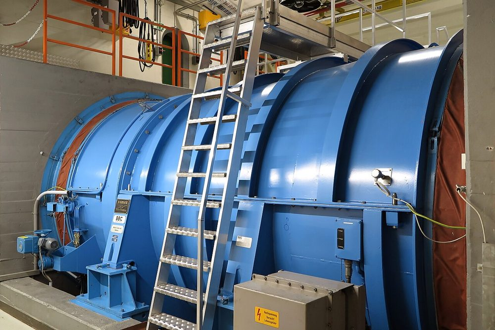
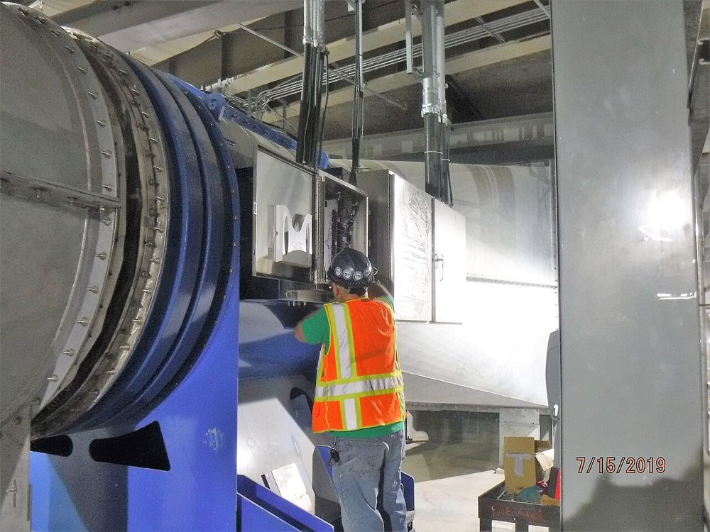
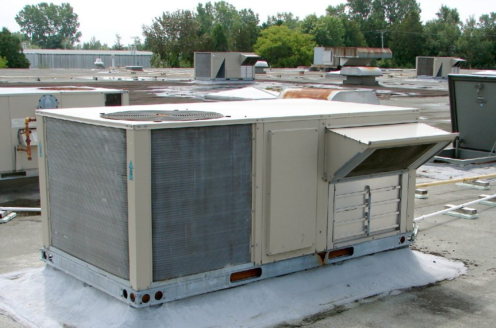
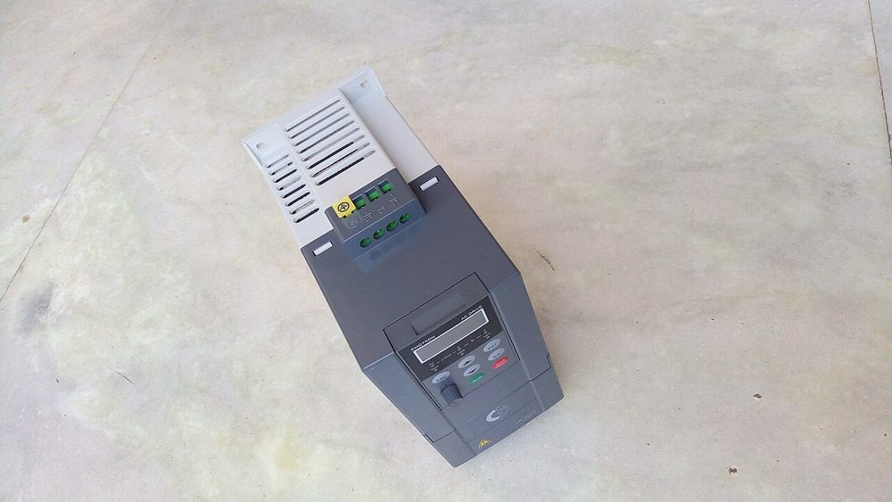
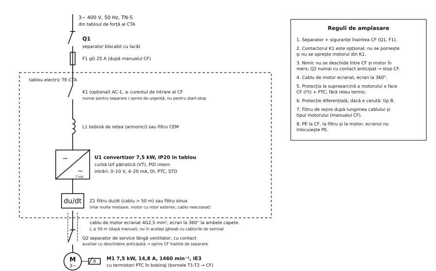
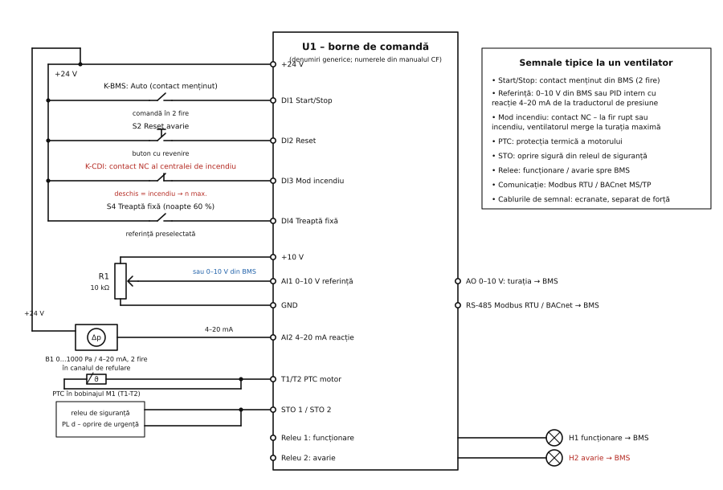
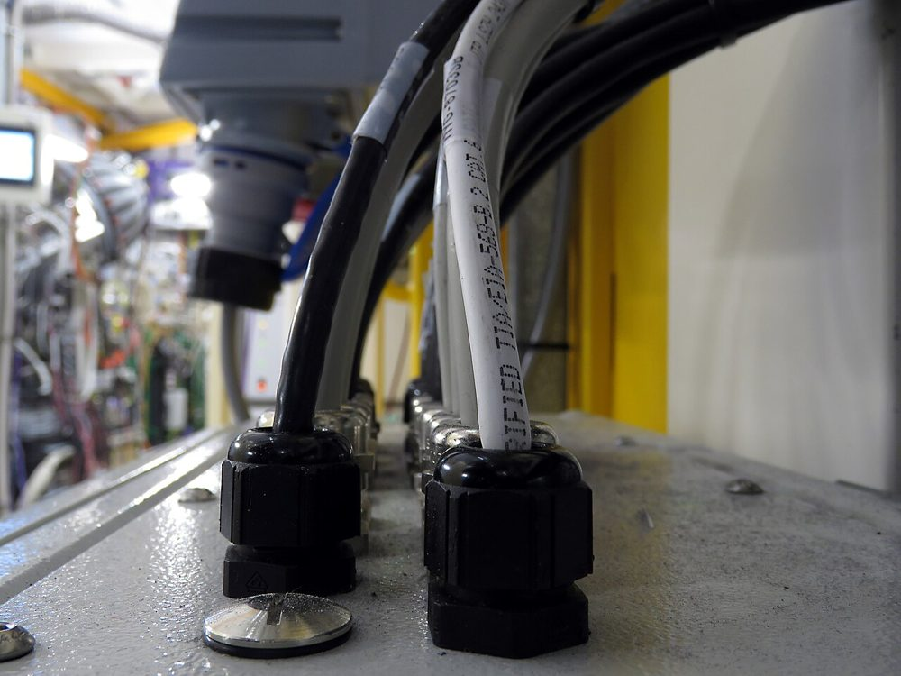
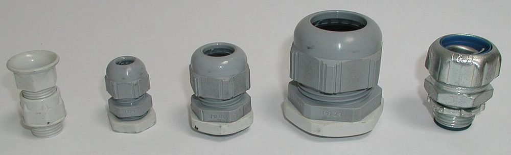
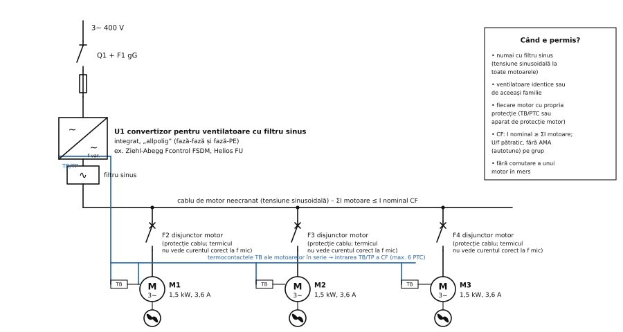
Condițiile Ziehl-Abegg: filtru sinus; suma curenților maximi ai motoarelor ≤ curentul nominal al aparatului; cel mult 6 PTC în serie; câte un aparat de protecție pe ventilator (exemplul din anexa manualului: 3 motoare cu STDT16); fără cuplarea unui motor în mers. Cursul BTS: motoare în paralel pe un variator — „fiecare plecare de motor protejată cu releu termic”.
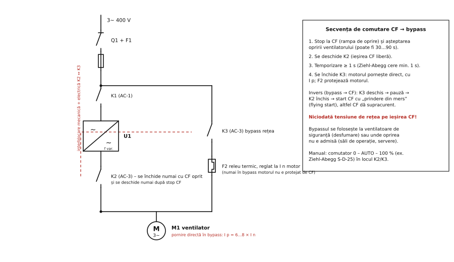
Ziehl-Abegg: două contactoare interblocate, întârziere ≥ 1 s la comutare, ≥ 90 s așteptare la reanclanșarea rețelei, „niciodată tensiune de rețea pe ieșirea convertizorului”. Varianta manuală: comutatorul S-D-25 / S-D-50 cu pozițiile 0 (separare, blocabilă) – AUTO (reglare) – 100 % (direct din rețea).
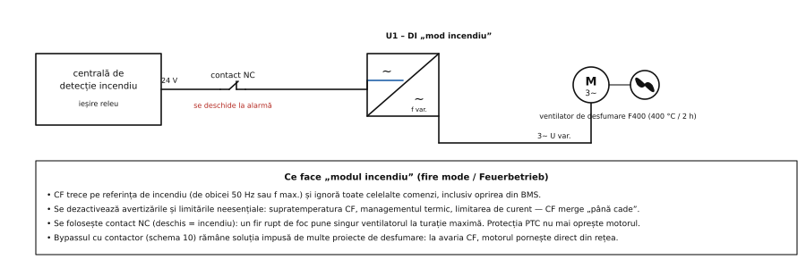
Danfoss (Fire Emergency Mode): ventilatorul poate fi de suprapresiune pe casa scării, de ventilație normală sau de evacuare a fumului; convertizorul trebuie să funcționeze cel puțin 1 h la 70 °C; referință la EN 12101-3; „run to dead”. Siemens (G120P, macro 104/105): mod de urgență (ESM) activat pe intrarea DI5 cu referință fixă 1 350–1 500 min⁻¹ „ca să țină căile de evacuare fără fum cât mai mult”.
| Ce verific | Cu ce și cum | Cât trebuie să iasă (sursa) |
|---|---|---|
| Curentul pe cele trei faze | clește de curent cu efect Hall și filtru trece-jos (Fluke 87V); un clește obișnuit citește și impulsurile PWM | ≤ I n de pe plăcuță; fazele „în limita a 10 % una față de alta” (Fluke); Ziehl-Abegg: dacă e peste plăcuță, „ventilatorul se scoate imediat din funcțiune”; Nicotra Gebhardt: se măsoară imediat după pornire |
| Tensiunea la motor | multimetru true-RMS cu filtru trece-jos; fără filtru citește „cu 20–30 % mai mult decât afișează convertizorul” (Fluke); vârfuri și du/dt numai cu osciloscop și sondă diferențială | între faze sub 1 % diferență; CAT III 600 V minimum |
| Rezistența de izolație | megohmmetru numai cu cablul de motor scos de pe bornele convertizorului; 500 V c.c. (Fluke) sau 1 000 V c.c. (ABB ACS880); circuitul PTC nu se megherează (max. 2,5 V) | ABB: peste 100 MΩ la 25 °C la motor nou; regula IEEE 43: 1 MΩ + 1 MΩ pe kV; se urmărește evoluția în timp |
| Vibrații | vibrometru după ISO 2954 pe lagăre, în trei direcții; ISO 14694 pentru ventilatoare ≤ 300 kW | categoria BV-3 rigid/elastic: la recepție 4,5 / 6,3 mm/s, alarmă 7,1 / 11,8, oprire 9,0 / 12,5 mm/s; Ziehl-Abegg: control la 6 luni |
| Debitul și presiunea | anemometru sau tub Pitot pe o traversă în canal (DIN EN 12599: secțiunea împărțită în arii egale, viteza măsurată în centrul fiecăreia); manometru diferențial pe prizele din canal | incertitudine ≤ 10 % (număr suficient de puncte); la guri ± 15 %; EN 12599 cere la recepție și „curentul și puterea absorbită a motoarelor” |
| Sensul de rotație | pornire scurtă la 5–10 Hz; comparare cu săgeata de pe carcasă (Ziehl-Abegg, Nicotra Gebhardt) | invers → debit mic, curent mare, zgomot; se schimbă din parametru sau două faze la motor, nu la intrarea CF |
| Protecția termică | se scoate firul PTC/TB → convertizorul trebuie să dea avarie („Motorstörung”, cod 15 la Fcontrol) și să nu repornească singur | Ziehl-Abegg: după răcire, reset din tastă, din intrarea de eliberare sau prin rețea |
| Rezonanțe | baleiere lentă 15…50 Hz, în trepte de 1–2 Hz, cu mâna pe canal și urechea la ventilator | benzile cu vibrații se introduc ca frecvențe de evitare; ebm-papst și Ziehl-Abegg cer explicit acest pas la punerea în funcțiune |
| Perturbații (CEM) | experimentul Berufskolleg Goldenberg: un fir de laborator de 0,5 m ca „antenă” la osciloscop, lângă cablul de motor | lângă un cablu neecranat elevii au măsurat vârfuri de 23 V la 16 kHz și un THD ≈ 25 %; concluzia lor: cabluri scurte, fără „codițe”, „ecranarea cablurilor de motor rămâne necesară” |
| Alarma și rezerva (grajd) | se simulează pana: alarma trebuie să sune și să apeleze; clapetele de avarie să se deschidă; grupul să pornească | DLG 422: test alarmă săptămânal, test grup lunar, întreținere anuală; TierSchNutztV § 4: verificare zilnică a ventilației |
| Temperatura | termometru cu infraroșu pe carcasa motorului și pe radiatorul convertizorului după o oră | convertizorul își arată temperatura IGBT în meniul de diagnoză (Fcontrol: „IGBT Temp.”) |
Fișa de laborator din școlile germane (Hochschule Bielefeld, practicum „Frequenzumrichter”): la gol se măsoară f, U, I efectiv, n; în sarcină f, I, P intrare, P ieșire, n, M; formele de undă la 2–16 kHz cu sonde diferențiale; se calculează plaja de reglaj n min : n nominal și randamentul. Turația se măsoară cu tahometru optic (bandă reflectorizantă pe ax) sau cu stroboscop (imaginea „stă” când frecvența blițului egalează turația). În Franța, TP-ul „VMC double flux VM20” (BTS FED) măsoară viteza aerului, turația, Δp, U și I și calculează randamentul η = Q·Δp / (U·I·cos φ) pe trei trepte: 265 m³/h / 515 Pa / 74,5 W; 111 m³/h / 178 Pa / 19,5 W; 97 m³/h / 160 Pa / 18,5 W — „puterea scade puternic cu scăderea debitului”.
| Funcție | Danfoss FC 102 | Siemens G120P (CU230P-2) | Schneider ATV212 | Ziehl-Abegg Fcontrol |
|---|---|---|---|---|
| curbă de cuplu variabil | 1-03 „VT” | p1300 = 2 | Pt = „P” | UF quadratisch = ON |
| frecvență minimă / maximă | 4-12 / 4-14 | p1080 / p1082 | LL / UL | Min./Max. Drehzahl (FTET: Minimal/Maximal Lüftung) |
| rampe | 3-41 / 3-42 | p1120 / p1121 | ACC / dEC | Hochlauf-/Rücklaufzeit |
| prindere din mers | 1-73 | p1200 = 1 | F301 | Fangmodus |
| frecvențe de evitare | 4-61…4-63 | p1091…p1094, p1101 | F270…F275 | Ausblendung 1…3 |
| PID | 1-00 = [3], grupa 20-** | p2200…, macro 105 (KP 1,1; TI 35 s) | F360… | regulator de climă (FTET) / extern |
| mod incendiu / urgență | 24-0* | ESM p3880…, macro 104/105 pe DI5 | F650… | 15D (temperatura ignorată, n max.) |
| protecție termică motor | 1-90 ETR / PTC | p0610 / p0601 | tHr / PTC (F645, VIB) | TB/TP + Strombegrenzung 120 % |
| repornire automată | 14-20 | p1210 = 26 | F303 | implicit după pană |
| curea ruptă (subsarcină) | 22-60…22-62 | — | F610…F612 | — |
Numerele parametrilor sunt din manualele citate în bibliografie; se verifică în manualul versiunii de firmware montate.
Toate numerele de mai jos sunt luate din manualele de programare ale producătorilor (linkurile în bibliografie). Motor: asincron 3~ 400 V, sarcină cu cuplu pătratic. Valorile „pentru ventilator” sunt cele recomandate la punerea în funcțiune; unde manualul nu are funcția, scrie nu există. Semnul ⚠ marchează ce nu am putut verifica în manualul consultat.
| Parametru | Denumire (manual) | Pentru ventilator | Observație |
|---|---|---|---|
| 1-20 … 1-25 | Motor Power / Voltage / Frequency / Current / Nominal Speed | de pe plăcuță (400 V, 50 Hz, I n, n) | FC 51 nu are parametru cos φ |
| 1-29 | Automatic Motor Tuning (AMT) | [2] Enable AMT → apoi tasta [Hand On] | „pe motor rece” |
| 1-03 | Torque Characteristics | [2] Automatic Energy Optimisation | FC 51 nu are „Variable torque”; [2] este pentru pompe și ventilatoare |
| 3-02 / 3-03 | Minimum / Maximum Reference | 0 / 50 | |
| 3-15 | Reference Resource 1 | [1] Analog in 53 (0–10 V) sau [2] Analog in 60 (4–20 mA) | |
| 3-41 / 3-42 | Ramp 1 Up / Down Time | 20–60 s | implicit 3 s — prea scurt |
| 4-12 / 4-14 | Motor Speed Low / High Limit [Hz] | 15 / 50 Hz | implicit 4-14 = 65 Hz — se reduce la 50 Hz! |
| 1-73 | Flying Start | [1] Enabled | prindere din mers |
| 4-61 / 4-63 | Speed Bypass From / To [Hz] | banda de rezonanță | 2 benzi |
| 14-20 / 14-21 | Reset Mode / Automatic Restart Time | [3] AutoReset ×3 / 10 s | repornire automată |
| 1-90 / 1-93 | Motor Thermal Protection / Thermistor Resource | [4] ETR Trip sau [2] Thermistor Trip; PTC pe DI 29 sau AI 53 | |
| 5-40 | Function Relay | [9] Alarm sau [5] Running | |
| 6-10…6-15 / 6-22…6-25 | Terminal 53 (0–10 V) / Terminal 60 (4–20 mA) scalare | 0,07…10 V → 0…50 Hz; 4…20 mA → 0…50 Hz | |
| 1-00, 7-20, 7-30, 7-33, 7-34, 3-10 | PID: Configuration Mode [3] Process Closed Loop; Feedback Resource [2] AI 60; Normal; P; I; Preset Reference | P 0,5–1; I 5–20 s; 3-10 = referința | 3-15 = [0] ca AI 60 să fie reacție |
| — | oprire la debit mic, curea ruptă, mod incendiu | nu există | |
| 14-22 | Operation Mode | [2] Initialization = reset la fabrică | apoi oprire/repornire rețea |
Tastatura LCP 11/12: [Menu] comută Status → Quick Menu → Main Menu. În Quick Menu: QM1 (date motor, 3-02/3-03, rampe) și QM2 (PID). [OK] intră, ▲▼ modifică, [OK] salvează, [Back] anulează. AMT: 1-29 = [2] → [Hand On]. Reset fabrică: 14-22 = [2] → se scoate tensiunea → la repornire apare Alarm 80.
| Parametru | Denumire (manual) | Pentru ventilator | Observație |
|---|---|---|---|
| 1-20 … 1-25, 1-28 | date motor; Motor Rotation Check | plăcuță; [1] Enabled la PIF | Quick Setup Q2 |
| 1-29 | Automatic Motor Adaptation (AMA) | [1] Enable Complete AMA → [Hand On] → [OK] la final | |
| 1-03 | Torque Characteristics | [3] Auto Energy Optim. VT (implicit) sau [1] Variable torque | „pompe centrifuge și ventilatoare, cuplu pătratic” |
| 3-41 / 3-42 | Ramp 1 Up / Down | 30–90 s | |
| 4-12 / 4-14 | Motor Speed Low / High Limit [Hz] | 15 / 50 Hz | |
| 4-61 / 4-63; 4-64 | Bypass Speed From / To; Semi-Auto Bypass Set-up | benzi de rezonanță; [1] Enabled = le găsește singur | meniul Q3-40 „Fan Functions” |
| 1-73 | Flying Start | [1] Enabled | |
| 14-20 / 14-21 | Reset Mode / Automatic Restart Time | [3] Automatic reset ×3 / 10 s | ignorat în mod incendiu |
| 1-90 / 1-93 | Motor Thermal Protection / Thermistor Source | [4] ETR trip 1 sau [2] Thermistor trip; PTC pe AI 53/54 sau DI | |
| 5-10, 5-12, 5-40 | Terminal 18 Start; Terminal 27; Relay 1 / Relay 2 | [8] Start; [37] Fire mode pe un DI; releu [9] Alarm / [5] Running | |
| 6-1* / 6-2* | AI 53 (0–10 V) / AI 54 (4–20 mA) | scalare 0…max; 6-17 Live Zero [1] | |
| 1-00, 20-00, 20-12, 20-13/14, 20-21, 20-81, 20-93/94, 20-79 | PID: Closed loop [3]; Feedback 1 Source [2] AI 54; unitate Pa; min/max; Setpoint 1; Normal; P 0,5 / I 20 s; PID Autotuning | meniul Q3-30 | |
| 22-40 … 22-44 | Minimum Run Time / Minimum Sleep Time / Wake-up Speed / Wake-up Ref-FB Difference | 10 s / 10 s / … / 10 % | oprire la debit mic |
| 22-60 / 22-61 / 22-62 | Broken Belt Function / Torque / Delay | [2] Trip; 10 %; 10 s | nu cu 14-20 = [13] Infinite |
| 24-00, 24-01, 24-05, 24-06, 24-09 | Fire Mode Function; Configuration; Preset Reference; Reference Source; Alarm Handling | [1] Enabled-Run Forward; [0] Open loop; 100 %; … | „numai în buclă deschisă” |
| 14-22 | Operation Mode | [2] Initialisation | sau la pornire [Status]+[Main Menu]+[OK] 5 s |
Tastatura GLCP: [Quick Menu] → Q2 Quick Setup (18 parametri: date motor, rampe, limite, releu) → Q3 Function Set-ups: Q3-10 motor avansat (1-90, 1-93, AMA), Q3-21 referință analogică, Q3-30 PID cu referință internă, Q3-40 Fan Functions (curea, rezonanțe semi-automate, 1-03, oprire la debit mic, 1-73). Editare: [OK] → ◀▶ cifra, ▲▼ valoarea → [OK].
| Parametru | Denumire (manual) | Pentru ventilator | Observație |
|---|---|---|---|
| P0100 | 50/60 Hz selection | 0 = Europa, kW, 50 Hz | |
| P0304, P0305, P0307, P0308, P0310, P0311 | Rated motor voltage / current / power / cos φ / frequency / speed | plăcuță; tensiunea după conexiunea Y/Δ | |
| P1900 | Motor data identification | 2 = identificare în repaus | |
| Cn002 / Cn008 | Connection macro „comandă de la borne” / „PID cu referință analogică” | Cn002: P0700 = 2, P1000 = 2, DI1 ON/OFF, DI3 reset, DO1 Running, DO2 Fault; Cn008: P2200 = 1, P2253 = 755.0, P2264 = 755.1 | înainte de a schimba un Cn: reset fabrică |
| AP020 | Application macro „Simple fan applications” | setează: P1110 = 1 (fără sens invers), P1300 = 7 (U/f pătratic, economic), P1200 = 2 (prindere din mers), P1210 = 2 (repornire după pană), P1080 = 20 Hz, P1120 = 10 s, P1121 = 20 s | meniul Setup, submeniul 3 |
| P1300 | Control mode | 2 = U/f pătratic sau 7 = pătratic economic | |
| P1080 / P1082; P1120 / P1121 | Min / Max frequency; Ramp-up / down | 15–20 / 50 Hz; 20–30 / 30–40 s | |
| P1091…P1094, P1101 | Skip frequency 1–4, bandwidth | rezonanțe; 2 Hz | |
| P0756 | Type of analog input | 0 = 0–10 V; 2 = 0–20 mA | |
| P0731 / P0732 | Digital output 1 / 2 | 52.2 Running / 52.3 Fault | |
| P0610 | Motor I²t temperature reaction | 6 = avertizare + declanșare (implicit) | V20 nu are intrare PTC |
| P2280 / P2285; P2350 | PID gain / integral time; PID autotune | ex. 1 / 5 s; 1 pentru autoacordare | |
| P2365 / P2366 / P2367 | Hibernation (oprire la debit mic): activare / întârziere oprire / repornire | 1 / 5 s / … | |
| P0503 | Keep-running operation | 1 = ignoră avariile (asemănător cu modul incendiu) | mod incendiu propriu-zis: nu există |
| P0970 | Factory reset | P0003 = 1, P0010 = 30, P0970 = 21 |
Tastatura BOP integrată: tasta M apăsată > 2 s → meniul Setup: 1 date motor (P0304…P1900) → 2 macro de conectare (Cn002 / Cn008) → 3 macro de aplicație (AP020) → 4 parametri comuni (MIN F, MAX F, RMP UP, RMP DN) → M > 2 s pentru ieșire. Motorul pornește numai din meniul de afișare.
| Parametru | Denumire (manual) | Pentru ventilator | Observație |
|---|---|---|---|
| P0010 | Commissioning parameter | 1 la început, 0 la sfârșit | BOP-2: meniul SETUP … FINISH |
| P0100; P0304…P0311 | Motor standard IEC; date motor | 0; plăcuță | |
| P1900 | Motor data identification | „STIL ROT” (repaus + rotire) | după setare pornește motorul pentru identificare (A07991) |
| P1300 | Control mode | 2 = „VF QUAD” (U/f pătratic) | |
| P0015 | Macro drive unit | 12 (DI0 pornire, DI1 sens, AI0 referință) sau 17/18 (2 fire); G120P: 105 „ventilator cu reglare de presiune + ESM” | |
| P1080 / P1082; P1120 / P1121 | Min / Max speed [rpm]; rampe | 450 / 1 500; 30 / 40 s | |
| P1200 | Flying restart | 1 (sau 4 = doar în sensul referinței) | |
| P1210 / P1211 | Automatic restart / trials | 26 (G120P macro 105) ⚠ | |
| P1091…P1094, P1101 | Skip frequencies, bandwidth | rezonanțe ⚠ | |
| P0601 / P0604 / P0605 / P0610 | Motor temperature sensor type / alarm / fault / reaction | 1 = PTC (borne 14/15); 130 °C; 145 °C; 2 = defect | |
| P2200, P2253, P2264, P2280, P2285 | PID: enable, setpoint, feedback, KP, TI | 1; AI; AI; macro 105: KP 1,1, TI 35 s, referință 40 % | valorile macro 105 din manualul CU230P-2 |
| p3880 / p3881 / p3882 / p1015 | ESM activation (DI) / setpoint source / alternative / fixed speed 15 | DI1; 1 = turație fixă p1015 = 1 350–1 500 min⁻¹; 2 = turație maximă | G120P, „Fire operation” |
| P0970 | Factory reset | BOP-2: Options → DRVRESET |
Tastatura BOP-2: SETUP → (RESET) → CTRL MOD = VF QUAD → EUR/USA = IEC → MOT VOLT, MOT CURR, MOT POW, MOT RPM → MOT ID = STIL ROT → MAC PAR (macro) → MIN RPM, RAMP UP, RAMP DWN → FINISH = YES. Apoi start pentru identificarea motorului.
| Parametru | Denumire (manual) | ATV12 | ATV320 |
|---|---|---|---|
| bFr | Standard motor frequency | 50 Hz (cerut la prima pornire) | 50 Hz |
| nPr, UnS, nCr, FrS, nSP, COS | putere, tensiune, curent, frecvență, turație, cos φ motor | plăcuță (UnS implicit 230 V → 400 V!) | plăcuță; tFr max. frequency 50 Hz (implicit 60) |
| tUn | Auto-tuning | YES → dOnE (motor rece, 1–2 s) | YES → tUS = dOnE |
| Ctt | Motor control type | PUMP = „U²/F, pentru pompe și ventilatoare” (UFt nu există la ATV12) | UFq [V/F Quad.] „cuplu variabil, pompe și ventilatoare” sau nLd (economic) |
| ACC / dEC | rampe | 20–30 s (implicit 3 s) | 20–30 s |
| LSP / HSP | Low / High speed | 15 / 50 Hz | 15 / 50 Hz |
| ItH | Motor thermal current | = nCr | = nCr; tHt = FCL la motor ventilat forțat |
| tCC / Fr1 / AI1t | 2 sau 3 fire / canal referință / tip intrare | 2C; AI1; 10U (0–10 V) sau 0A (4–20 mA) — implicit 5U! | 2C; AI1; AI1 numai 0–10 V, AI3 pentru 4–20 mA |
| CFG | Macro-configuration | PId (AI1 reacție, referință internă, Ctt = PUMP) | StS sau PId |
| PIF, rPG, rIG, rPI, PII | PID: reacție, câștig P, câștig I, referință internă, activare | AI1; 1; 1; consemn; YES | AI3; 1; 1; consemn; YES |
| FLr | Catch on the fly (prindere din mers) | YES | YES (comandă 2 fire pe nivel) |
| JPF / JF2 / JF3 | Skip frequency | JPF (una singură) | JPF, JF2, JF3 |
| Atr / tAr | Automatic restart / timp maxim | YES / 5 min (cere tCC = 2C, tCt = LEL) | YES |
| PTC | sondă motor | nu există intrare PTC | PtCL pe LI6 + comutatorul SW2 pe PTC |
| r1 | releu R1 | FLt (avarie) sau rUn | FLt / rUn |
| tLS; LUn/LUL; InH | oprire la turație mică (timp); subsarcină (curea); inhibare defecte (≈ mod incendiu) | nu există (doar ULA alarmă) | tLS 30 s; LUn/LUL → defect ULF; InH pe LI |
| FCS / GFS | reset la fabrică | COnF → FCS = InI (ENT 2 s) | CONF → FCS- → FCSI = InI → FrY- = ALL → GFS = YES |
Tastatura: ATV12 — tasta MODE comută rEF → MOn → COnF; jog dial rotit = navigare, apăsat = ENT; COnF → MyMenu (bFr, Fr1, ACC, dEC, LSP, HSP, nPr, nCr, AI1t) → FULL → drC- (UnS, nCr, FrS, nSP, Ctt = PUMP, tUn). ATV320 — CONF → FULL → SIM- [SIMPLY START] (tCC, CFG, bFr, nPr, UnS, nCr, FrS, nSP, tFr, tUn, ItH, ACC, dEC, LSP, HSP) → DRC- (Ctt = UFq) → I-O-, CTL-, FUN-, FLT-. Parametrii marcați „2s” se confirmă ținând ENT 2 s.
| Parametru | Denumire (manual) | Pentru ventilator | Observație |
|---|---|---|---|
| AU4 | Auto set function (macro) | 0 [Factory set] = borne, VIA 0–10 V/0–20 mA; 4 [4-20 mA speed ref] | 1 Run permissive, 2 3 fire, 3 +/− viteză |
| uLu / uL / F415 / F417 | tensiune / frecvență / curent / turație motor | 400 V / 50 Hz / plăcuță | se introduc înainte de autotune |
| F400 | Auto-tuning drive | 4 [Tun Static 1] | |
| Pt | Mot cont. mode sel. | 1 [Variable Torque] (implicit) — „ventilatoare și pompe centrifuge” | |
| ACC / dEC; LL / UL; FH | rampe; limite; frecvență maximă | 20–30 s; 15 / 50 Hz; 50 Hz | |
| tHr | Motor thermal prot. | 100 % (= F415) | |
| CMOd / FMOd / F109 / F201, F203 | sursă comandă / sursă referință / VIA ca AI / scalare VIA | 0 borne; 1 VIA; 0; 20 % / 100 % pentru 4–20 mA | |
| F301 | Catch on fly | 3 [Power loss, run] (implicit) | |
| F303 | Number auto reset | 3 | |
| F270…F275 | Jump frequency 1/2/3 + bandwidth | rezonanțe | |
| F360, F362, F363 | PID control enable; Prop Gain; Integral Gain | 1 [PID by VIA] sau 2 [by VIB]; 0,30; 0,20 (implicite) | |
| F650, F294 | Forced fire control; Forced speed freq. | 1 [Enable forward] + LI funcția 52/53; 50 Hz | ENT 2 s |
| F610 / F611 / F612 | Underload det. / level / time (curea ruptă) | 1 Fault / 30 % / 10 s | (nu „F615”) |
| F256 | Time limit low spd | 60 s → oprire la debit mic | |
| F645 / F646 | Mot PTC selection / PTC resistor value | 1 [Enabled fault] / 3 000 Ω — VIB devine intrare PTC | |
| F130 / F132 | releu RY / releu FL | funcționare / defect (11, implicit) | |
| tYP | Parameter reset | 3 [Factory set] |
Tastatura: MODE comută Run → MON → PRG; ▲▼ parcurg AUH/AUF, ACC, dEC, LL, UL, tHr, Pt, tYP, FMOd, CMOd, AU4, apoi grupele F1-- … F9--; ENT deschide și salvează.
| Parametru | Denumire (manual) | Pentru ventilator | Observație |
|---|---|---|---|
| 99.03 / 99.04 | Motor type / Motor control mode | Asynchronous / Scalar (implicit) | Vector numai dacă se vrea ID run |
| 99.06 … 99.11 | Motor nominal current / voltage / frequency / speed / power / cos φ | plăcuță | asistentul de prima pornire le cere |
| 97.20 | U/F ratio | Squared (implicit) — „pompe centrifuge și ventilatoare” | ignorat dacă 45.11 Energy optimizer = Enable |
| 21.19 | Scalar start mode | Automatic (implicit) = prindere din mers | |
| 30.13 / 30.14; 23.12 / 23.13 | Min / Max frequency; rampe | 15 / 50 Hz; 30 / 40 s | |
| 28.51 … 28.54 | Critical frequency function / 1 low / 1 high / 2 low … | rezonanțe | |
| 12.15 … 12.20 | AI1: unitate, min, max, scalare | 4–20 mA sau 0–10 V → 0…50 Hz | |
| 20.01 / 20.03; 10.24 / 10.27 / 10.30 | Ext1 commands / in1; relee RO1 / RO2 / RO3 | In1 Start / DI1; Damper / Running / Fault (implicitul HVAC) | |
| 40.07, 40.08, 40.16, 40.32, 40.33 | PID: mode On; feedback AI2; setpoint AI1; gain 1,0; integration 10 s | ||
| 40.43 / 40.44; 40.47 / 40.48 | Sleep level / delay; wake-up deviation / delay | > 0 / 60 s | 0,0 = dezactivat |
| 31.12 / 31.14 | Autoreset selection / trials | … / 3 | |
| 35.11 / 35.12; 35.51…35.56 | Temperature 1 source (PTC pe DI6) / fault limit; curba de sarcină a motorului | PTC; 130 °C | |
| 37.02 / 37.04 | User load curve: signal / underload actions | Motor torque / Fault — „curea ruptă, lipsă debit” | |
| 70.02 … 70.06, 70.10, 70.20 | Override enable / activation source / reference source / direction / frequency / interlocks / fault handling | On / DIx / Override frequency / Forward / 50 Hz / … / Autoreset | = mod incendiu |
| 96.06 | Parameter restore | Restore defaults (păstrează motorul) / Clear all |
Panoul HOA: la prima pornire rulează First start assistant (limbă → dată/oră → date motor → „Spin the motor” pentru sens). Menu → Primary settings → Motor; Start, stop, reference („Direct control via I/O” = implicitul HVAC: AI1 referință, DI1 start, RO2 Running, RO3 Fault; sau „PID control, single motor”); Ramps; Limits; PID; Override. Reset: Primary settings → Reset to defaults.
| Meniu | Parametru (manual) | Pentru ventilator | Observație |
|---|---|---|---|
| Motor Setup | MotorBemessStrom / MotorBemessSpng. | I n de pe plăcuță (sau suma la mai multe motoare) / 400 V | implicit = curentul aparatului / 400 V |
| Motor Setup | Eckfrequenz / Max. Frequenz | 48,5 Hz / 50 Hz (motor 400 V 50 Hz); 48,5 / 60 la 50/60 Hz; 57 / 60 la 60 Hz | tensiunea de ieșire max. 95 % din rețea, de aceea 48,5 Hz |
| Motor Setup | UF quadratisch | ON (din fabrică) | OFF = liniar, numai la sarcini dinamice |
| Motor Setup | Hochlaufzeit / Rücklaufzeit | 20 s (2,5–16 A) / 40 s (22–50 A) din fabrică | 0…250 s |
| Motor Setup | Strombegrenzung | 120 % (implicit) | 100…130 % |
| Motor Setup | Startspannung / Boost Funktion | 0 % / OFF | supracreștere de tensiune numai dacă motorul nu pornește |
| Motor Setup | Drehrichtung | CW; se verifică cu săgeata de pe ventilator | |
| Motor Setup | Ausblendung 1…3 (Bereich Min./Max.) | benzile de rezonanță | |
| Motor Setup | Motorheizung; DC Bremse Modus | ON la exterior/grajd iarna; 0 | |
| Einstellung | Min. Drehzahl / Max. Drehzahl | ex. 10 Hz / 50 Hz | |
| Controller Setup | Steuermodus | 0 = semnal extern 0–10 V / PWM pe E1 (implicit); 4/5/6 = referință internă fixă | 0–20 mA prin punte internă E1.1/E1.2 |
| IO Setup | D1 Funktion / K1 Funktion / E1 min. / E1 max. | 1D Freigabe (eliberare) / 2K Störmeldung (avarie) / 5 % / 100 % | 15D = mod incendiu (ignoră temperatura, n max.) |
| Start | PIN Eingabe | 0010 = meniurile de service; 1234 = Einstellung; 9095 = reset la fabrică | FTET: PIN 1070 pentru meniul Installation |
| FTET Lüftung | Sollwert / Regelbereich / Min. Lüftung / Max. Lüftung | 20 °C / 4 K / 20 % / 100 % | taste directe 0 / 2 / 4 / 8 |
| FTET Alarm | Alarm Minimum / Maximum; Alarm Differenz | −5 K / +5 K; întârziere 60 s | releu K1 |
| FTET Kurvenprogramm | Start / Knickpunkt 1 / 2 / Endpunkt (zi 1 / 10 / 60 / 120) | prescris 26 → 24 → 23 → 20 °C; minim 10 → 12 % … | tasta 9 = ziua curentă |
| FTET IO | E1/T1 senzor KTY/PT1000; A1 Lüftung; A2 Klappe; K3 Spitzenlast |
Tastatura FSDM: P = deschide meniul / confirmă; ▲▼ = navigare / valoare; ▲+▼ împreună = ieșire fără salvare. Ordinea meniurilor: Start → Info → Ereignisse → Einstellung → Controller Setup → IO Setup → Motor Setup → Diagnose. Punere în funcțiune (cap. 7 din manual): puntea TB/TP dacă nu e termocontact → puntea D1/24 V dacă nu e comandă la distanță → capacul închis → tensiune → limba → date motor (Eckfrequenz/Max. Frequenz după tabel) → referința pe E1.
| Pas | FC 51 / FC 102 | V20 / G120 | ATV12 / ATV320 / ATV212 | ACH580 | Fcontrol |
|---|---|---|---|---|---|
| 1. reset fabrică | 14-22 = [2] | P0970 = 21 / DRVRESET | FCS = InI / GFS = YES / tYP = 3 | 96.06 | PIN 9095 |
| 2. date motor | 1-20…1-25 | P0304…P0311 | UnS, nCr, FrS, nSP / uLu, uL, F415, F417 | 99.06…99.11 | MotorBemessStrom / Spng. |
| 3. autotune | 1-29 → Hand On | P1900 = 2 / STIL ROT | tUn = YES / F400 = 4 | 99.13 (opțional) | — |
| 4. cuplu pătratic | 1-03 = [2] AEO / [3] AEO VT | P1300 = 2 sau 7 (AP020) | Ctt = PUMP / UFq; Pt = 1 | 97.20 = Squared | UF quadratisch = ON |
| 5. f min / f max | 4-12 / 4-14 (65 → 50!) | P1080 / P1082 | LSP / HSP; LL / UL | 30.13 / 30.14 | Min./Max. Drehzahl |
| 6. rampe | 3-41 / 3-42 | P1120 / P1121 | ACC / dEC | 23.12 / 23.13 | Hochlauf-/Rücklaufzeit |
| 7. referință | 3-15; 6-1*/6-2* | P1000 = 2; P0756 | Fr1 = AI1; AI1t / FMOd = 1 | 28.11; 12.xx | Steuermodus 0, E1 |
| 8. PID | 7-2*/7-3* / 20-** | Cn008; P2200… | CFG = PId; PIF… / F360 | 40.xx | FTET: Sollwert/Regelbereich |
| 9. prindere din mers | 1-73 = [1] | P1200 = 2 | FLr = YES / F301 | 21.19 Automatic | Fangmodus |
| 10. rezonanțe | 4-61/4-63 (4-64 semi-auto) | P1091…P1094 | JPF, JF2, JF3 / F270… | 28.51… | Ausblendung 1…3 |
| 11. protecție termică | 1-90 / 1-93 | P0610 / P0601 (G120) | ItH; PtCL (320) / F645 (212) | 35.11 | TB/TP + Strombegrenzung |
| 12. relee, repornire, incendiu | 5-40; 14-20; 24-0* (FC 102) | P0731; P1210; p3880 (G120P) | r1; Atr; InH / F650 | 10.24…; 31.12; 70.xx | K1 2K; automat; 15D |
Date: refulare 12 000 m³/h la 800 Pa; ventilator cu rotor liber, η ≈ 0,72, cuplat direct; motor 7,5 kW / 400 V / 14,8 A / cos φ 0,81 / 1 460 min⁻¹ / IE3 cu PTC; sistem VAV cu 12 cutii, presiune statică cerută 300 Pa; rețea 3×400 V TN-S; 25 m până la motor; convertizor în tabloul CTA.
Puterea la ax: Q = 12 000 / 3 600 = 3,33 m³/s; P ax = 3,33 · 800 / 0,72 = 3,7 kW. Motorul de 7,5 kW e ales de proiectant cu rezervă la 50 Hz (filtre înfundate); cu convertizor rămâne, pentru că absoarbe doar cât cere ventilatorul.
Convertizorul: după 14,8 A, regim normal: Danfoss FC-102 P7K5T4 (7,5 kW, 16 A), Siemens SINAMICS G120P 7,5 kW, Schneider ATV212HU75N4 — toate cu filtru C2 integrat. Regula: I CF ≥ I n motor.
Protecții și cabluri: Q1 separator 3×32 A blocabil; F1 după manual (gG 25 A); fără contactor; alimentare 4×4 mm²; cablu de motor ecranat 4G2,5 mm², 25 m, fără filtru de ieșire (sub 50 m); PE 10 mm²; separator de service cu contact anticipat la ventilator.
Comanda: start/stop din BMS; referință 300 Pa; traductor 0–1 000 Pa / 4–20 mA la 2/3 din canal; mod incendiu pe DI3 (NC); relee spre BMS; Modbus.
Parametri: VT; f min 18 Hz; f max 50 Hz; rampe 60/60 s; prindere din mers; repornire automată; PID P = 0,5, I = 8 s (după reglaj); frecvențe de evitare 23–26 Hz (găsite la baleiere); I²t = 14,8 A; PTC activ; oprire sub 20 Hz timp de 60 s, repornire la −50 Pa.
Economia: profil 2 000 h la 100 %, 1 500 h la 70 %, 500 h la 50 %; P absorbită la 50 Hz = 3,7 / 0,904 = 4,1 kW. Cu clapete (putere 100 / 90 / 85 %): 2 000 × 4,1 + 1 500 × 3,7 + 500 × 3,5 ≈ 15 500 kWh/an. Cu convertizor: 2 000 × 4,1 + 1 500 × 4,1 × 0,343 + 500 × 4,1 × 0,125 = 8 200 + 2 110 + 256 ≈ 10 570 kWh/an. Economie ≈ 4 900 kWh/an ≈ 4 400 lei/an la 0,9 lei/kWh, plus presiune constantă la toate clasele.
Debitul: vara 84 m³/h × 500 = 42 000 m³/h; iarna (14 m³/h × 500) ≈ 7 000 m³/h → plaja 1 : 6.
Ventilatoarele: 4 × Ø 630 mm, 1~ 230 V, 10 500 m³/h la 30 Pa, motor cu rotor exterior „comandabil în tensiune”, curent maxim ≈ 3,2 A fiecare (după catalogul producătorului), cu termocontact TB.
Metoda: convertizor cu filtru sinus pentru agricultură, 1~ 230 V — pe fiecare compartiment un Ziehl-Abegg Fcontrol FTET (4, 6 sau 10 A): 2 ventilatoare reglate împreună pe un FTET 10 A (2 × 3,2 = 6,4 A ≤ 10 A) și 2 ventilatoare de vârf cuplate pe releu (funcția „Spitzenlast”, pornesc la 50 % și merg direct din rețea), sau 4 ventilatoare reglate pe două aparate FTET 10 A în rețea Modbus. Fiecare ventilator cu propriul aparat de protecție (S-ET10), intrarea TB comună nefolosită.
Amplasare și instalare: aparatele în anticameră (IP54); cablu de motor neecranat (filtru sinus); cabluri de senzori ≤ 30 m, ecranate peste 20 m; DDR 300 mA; senzor de temperatură în compartiment la înălțimea animalelor + senzor exterior; clapete de admisie cu servomotor 0–10 V și revenire cu arc; comutator 0 – AUTO – 100 % (S-E-20) pe fiecare aparat.
Reglaje: valoare prescrisă 20 °C (curbă de creștere 26 → 20 °C pe 120 zile); bandă de reglare 4 K (iarna 3–4 K, vara 5–7 K); ventilație minimă 20 %; alarme ±5 K, întârziere 60 s; releu de alarmă spre apelatorul telefonic.
Siguranță (obligatorie): alarmă la pană cu autonomie ≥ 2 h; clapete de avarie cu arc; grup electrogen dimensionat la suma consumatorilor + 20–25 %, cu comutator rețea/grup cu poziție zero; test săptămânal / lunar.
Economia (Ziehl-Abegg): ≈ 207 €/an pe ventilator față de regulatorul cu triac; la 4 ventilatoare ≈ 830 €/an; aparatele (2 × ≈ 1 000 €) se amortizează în ≈ 2,5 ani.
Hală de 1 000 porci la îngrășat, în două compartimente de 500, zona I. Se cer: debitul de vară și de iarnă (DIN 18910), numărul de ventilatoare Ø 630 (10 500 m³/h la 30 Pa, 3,2 A), alegerea aparatelor de reglare (FTET 4/6/10 A, câte, cum grupate), schema unui compartiment (senzori, aparat, ventilatoare, clapete, alarmă, ocolire), lista parametrilor cu valori, dispozitivele de siguranță cerute de lege, puterea grupului electrogen (toți consumatorii: ventilatoare, hrănire 3 kW, iluminat 1,5 kW, pompe 2 kW), economia anuală față de regulatoare cu triac (după cifrele Ziehl-Abegg) și lista verificărilor la recepție.
Pozele: Wikimedia Commons, cu autorul și licența sub fiecare imagine. Schemele: desenate în Python (scheme_svg.py), livrate ca SVG editabil în Inkscape, cu straturile „Aparate” / „Conductoare” / „Text”. Răspunsurile testului sunt într-un document separat, numai pentru profesor.